Федеральное агентство
по управлению
государственным имуществом
Открытое акционерное общество
«Научно-исследовательский центр «Строительство»
(ОАО «НИЦ «Строительство»)
СНиП
НАГРУЗКИ И ВОЗДЕЙСТВИЯ
Москва
2010
Предисловие
Разработан - Центральным научно-исследовательским институтом строительных конструкций имени В.А. Кучеренко, ОАО НИЦ «Строительство» доктор техн. наук, проф. Назаров Ю.П. (ЦНИИСК), канд. техн. наук Попов Н.А. (ЦНИИСК), канд. техн. наук Лебедева И.В. (ЦНИИСК), доктор техн. наук, проф. Травуш В.И. (РААСН), доктор геогр. наук, проф. Кобышева Н.В. (ГГО им. Воейкова)
Loads &actions
Дата введения 2010
Настоящие нормы и правила устанавливают требования по назначению нагрузок, воздействий и их сочетаний, учитываемых при расчетах зданий и сооружений по предельным состояниям первой и второй групп, в соответствии с положениями ГОСТ 27751.
Дополнительные требования по назначению расчетных нагрузок допускается устанавливать в нормативных документах на отдельные виды сооружений, строительных конструкций и оснований.
Для зданий и сооружений I и II уровней ответственности дополнительные требования к нагрузкам и воздействиям на строительные конструкции и основания необходимо устанавливать в соответствующих нормативных документах, специальных технических условиях (СТУ), заданиях на проектирование с учетом рекомендаций, разработанных специализированными организациями.
Примечание - Далее по тексту, где это возможно, термин «воздействие» опущен и заменен термином «нагрузка», а слова «здания и сооружения» заменены словом «сооружения».
1.1.1 При проектировании следует учитывать нагрузки, возникающие при возведении и эксплуатации сооружений, а также при изготовлении, хранении и перевозке строительных конструкций.
1.1.2 Основными характеристиками нагрузок, установленных в настоящих нормах, являются их нормативные значения.
При необходимости учета влияния длительности нагрузок, при проверке на выносливость и в других случаях, оговоренных в нормах проектирования конструкций и оснований, кроме того, устанавливаются пониженные нормативные значения нагрузок от людей, животных, оборудования на перекрытия жилых, общественных и сельскохозяйственных зданий, от мостовых и подвесных кранов, снеговых, температурных климатических воздействий.
1.1.3 Расчетное значение нагрузки следует определять как произведение ее нормативного значения на коэффициент надежности по нагрузке gf, соответствующий рассматриваемому предельному состоянию. Минимальные значения коэффициента надежности gf определяются следующим образом:
а) При расчете по 1-ой группе предельных состояний - в соответствии с пп. 1.3.4, 2.2, 3.2.2, 3.3.4, 3.4.4, 4.8, 5.8, 6.1.12, 7.5 и 8.8;
б) При расчете по 2-ой группе предельных состояний - принимаются равными единице, если в нормах проектирования конструкций и оснований не установлены другие значения.
1.1.4 В особых сочетаниях коэффициент надежности по нагрузке для постоянных, длительных и кратковременных нагрузок следует принимать равным единице, за исключением случаев, оговоренных в других нормативных документах.
1.1.6 При расчете конструкций и оснований для условий возведения зданий и сооружений расчетные значения снеговых, ветровых, гололедных нагрузок и температурных климатических воздействий следует снижать на 20 %.
1.2.1 В зависимости от продолжительности действия нагрузок следует различать постоянные Рd и временные (длительные Рl, кратковременные Рt, особые Рs) нагрузки.
1.2.2 Нагрузки, возникающие при изготовлении, хранении и перевозке конструкций, а также при возведении сооружений, следует учитывать в расчетах как кратковременные нагрузки.
Нагрузки, возникающие на стадии эксплуатации сооружений, следует учитывать в соответствии с указаниями пп. 1.2.3 - 1.2.6.
1.2.3 К постоянным Рd нагрузкам следует относить:
а) вес частей сооружений, в том числе вес несущих и ограждающих строительных конструкций;
б) вес и давление грунтов (насыпей, засыпок), горное давление;
в) гидростатическое давление.
Сохраняющиеся в конструкции или основании усилия от предварительного напряжения следует учитывать в расчетах как усилия от постоянных нагрузок.
1.2.4 К длительным Рl нагрузкам следует относить:
а) вес временных перегородок, подливок и подбетонок под оборудование;
б) вес стационарного оборудования: станков, аппаратов, моторов, емкостей, трубопроводов с арматурой, опорными частями и изоляцией, ленточных конвейеров, постоянных подъемных машин с их канатами и направляющими, а также вес жидкостей и твердых тел, заполняющих оборудование;
в) давление газов, жидкостей и сыпучих тел в емкостях и трубопроводах, избыточное давление и разрежение воздуха, возникающее при вентиляции шахт;
г) нагрузки на перекрытия от складируемых материалов и стеллажного оборудования в складских помещениях, холодильниках, зернохранилищах, книгохранилищах, архивах и подобных помещениях;
д) температурные технологические воздействия от стационарного оборудования;
е) вес слоя воды на плоских водонаполненных покрытиях;
ж) вес отложений производственной пыли, если не предусмотрены соответствующие мероприятия по ее удалению;
з) пониженные нагрузки, перечисленные в п. 1.1.2;
и) воздействия, обусловленные деформациями основания, не сопровождающимися коренным изменением структуры грунта, а также оттаиванием вечномерзлых грунтов;
к) воздействия, обусловленные изменением влажности, усадкой и ползучестью материалов.
1.2.5 К кратковременным нагрузкам Рt следует относить:
а) нагрузки от оборудования, возникающие в пускоостановочном, переходном и испытательном режимах, а также при его перестановке или замене;
б) вес людей, ремонтных материалов в зонах обслуживания и ремонта оборудования;
в) нагрузки от людей, животных, оборудования на перекрытия жилых, общественных и сельскохозяйственных зданий с полными нормативными значениями, кроме нагрузок, указанных в п. 1.2.4 а, б, г, д;
г) нагрузки от подвижного подъемно-транспортного оборудования (погрузчиков, электрокаров, кранов-штабелеров, тельферов, а также от мостовых и подвесных кранов с полным нормативным значением), включая вес транспортируемых грузов;
д) нагрузки от транспортных средств;
е) климатические (снеговые, ветровые, температурные и гололедные) нагрузки.
1.2.6 К особым Рs нагрузкам следует относить:
а) сейсмические воздействия;
б) взрывные воздействия;
в) нагрузки, вызываемые резкими нарушениями технологического процесса, временной неисправностью или поломкой оборудования;
г) воздействия, обусловленные деформациями основания, сопровождающимися коренным изменением структуры грунта (например, при замачивании просадочных грунтов) или оседанием его в районах горных выработок и в карстовых;
д) нагрузки, обусловленные пожаром;
е) нагрузки от столкновений транспортных средств с частями сооружения.
Расчетные значения особых нагрузок устанавливаются в соответствующих нормативных документах или в задании на проектирование.
1.3.1 Расчет конструкций и оснований по предельным состояниям первой и второй групп следует выполнять с учетом неблагоприятных сочетаний нагрузок или соответствующих им усилий.
Эти сочетания устанавливаются из анализа реальных вариантов одновременного действия различных нагрузок для рассматриваемой стадии работы конструкции или основания.
1.3.2 В зависимости от учитываемого состава нагрузок следует различать:
а) основные сочетания нагрузок, состоящие из постоянных, длительных и кратковременных:
Сm = Рd + (ψl1Рl1 + ψl2Рl2 + ψl3Рl3 + ...) + (ψt1Рt1 + ψt2Рt2 + ψt3Рt3 + ...) (1.1)
б) особые сочетания нагрузок, состоящие из постоянных, длительных, кратковременных и одной из особых нагрузок.
Сs = Сm + Рs, (1.2)
где
Сm - нагрузка для основного сочетания;
Сs - нагрузка для особого сочетания;
ψli (i = 1, 2, 3, ...) - коэффициенты сочетаний для длительных нагрузок;
ψti (i = 1, 2, 3, ...) - коэффициенты сочетаний для кратковременных нагрузок.
1.3.3 Для основных и особых сочетаний нагрузок, за исключением случаев, оговоренных в нормах проектирования сооружений в сейсмических районах и в нормах проектирования конструкций и оснований, коэффициент сочетаний длительных нагрузок ψl определяется следующим образом:
- для равномерно распределенных длительных нагрузок (п. 1.2.4)
ψl1 = 1,0; ψl2 = ψl3 = ... = 0,95,
где
ψl1 - коэффициент сочетаний, соответствующий основной по степени влияния длительной нагрузке;
ψl2, ψl3 - коэффициенты сочетаний для остальных длительных нагрузок;
для крановых нагрузок в соответствии с указаниями п. 4.19;
для остальных нагрузок ψl = 1,0.
ψt1 = 1,0; ψt2 = 0,9; ψt3 = ψt4 = ... = 0,7,
где
ψt1 - коэффициент сочетаний, соответствующий основной по степени влияния кратковременной нагрузке;
ψt2 - коэффициент сочетаний, соответствующий второй кратковременной нагрузке;
ψt3, ψt4 - коэффициенты сочетаний для остальных кратковременных нагрузок.
В особых сочетаниях нагрузок, включающих взрывные воздействия, нагрузки, вызываемые пожаром, столкновением транспортных средств с частями сооружений, кратковременные нагрузки допускается не учитывать.
1.3.6 При учете сочетаний нагрузок в соответствии с указаниями пп. 1.3.3 - 1.3.5 за одну временную нагрузку следует принимать:
а) нагрузку определенного рода от одного источника (давление или разрежение в емкости, снеговую, ветровую, гололедную нагрузки, температурные климатические воздействия, нагрузку от одного погрузчика, электрокара, мостового или подвесного крана);
б) нагрузку от нескольких источников, если их совместное действие учтено в расчетных значениях нагрузки (нагрузку от оборудования, людей и складируемых материалов на одно или несколько перекрытий с учетом коэффициентов j1 - j4, приведенных в пп. 3.2.4 и 3.2.5; нагрузку от нескольких мостовых или подвесных кранов с учетом коэффициента yl; приведенного в п. 4.19; гололедно-ветровую нагрузку, определяемую в соответствии с п. 7.3).
2.1 Нормативное значение веса конструкций заводского изготовления следует определять на основании стандартов, рабочих чертежей или паспортных данных заводов-изготовителей, других строительных конструкций и грунтов - по проектным размерам и удельному весу материалов и грунтов с учетом их влажности в условиях возведения и эксплуатации сооружений.
2.2 Коэффициенты надежности по нагрузке gf для веса строительных конструкций и грунтов приведены в таблице 2.1.
Таблица 2.1
|
Коэффициент надежности по нагрузке gf |
|
|
Конструкции Металлические, за исключением случаев, указанных в п. 2.3 |
1,05 |
|
Бетонные (со средней плотностью свыше 1600 кг/м3), железобетонные, каменные, армокаменные, деревянные |
1,1 |
|
Бетонные (со средней плотностью 1600 кг/м3 и менее), изоляционные, выравнивающие и отделочные слои (плиты, материалы в рулонах, засылки, стяжки и т.п.), выполняемые: |
|
|
в заводских условиях |
1,2 |
|
на строительной площадке |
1,3 |
|
Грунты В природном залегании |
1,1 |
|
На строительной площадке |
1,15 |
|
Примечание - При определении нагрузок от грунта следует учитывать нагрузки от складируемых материалов, оборудования и транспортных средств, передаваемые на грунт. |
|
2.4 При проверке конструкций на устойчивость положения против опрокидывания, а также в других случаях, когда уменьшение веса конструкций и грунтов может ухудшить условия работы конструкций, следует произвести расчет, принимая для веса конструкции или ее части коэффициент надежности по нагрузке gf = 0,9, если иное значение не указано в нормах проектирования этих конструкций.
Нормы настоящего раздела распространяются на нагрузки от людей, животных, оборудования, изделий, материалов, временных перегородок, действующие на перекрытия, покрытия, лестницы зданий и сооружений и полы на грунтах.
Варианты загружения перекрытий этими нагрузками следует принимать в соответствии с предусмотренными условиями возведения и эксплуатации зданий. Если на стадии проектирования данные об этих условиях недостаточны, при расчете конструкций и оснований необходимо рассмотреть следующие варианты загружения отдельных перекрытий:
- сплошное загружение принятой нагрузкой;
- неблагоприятное частичное загружение при расчете конструкций и оснований, чувствительных к такой схеме загружения;
- отсутствие временной нагрузки.
При этом суммарная временная нагрузка на перекрытия многоэтажного здания при неблагоприятном частичном их загружении не должна превышать нагрузку при сплошном загружении перекрытий, определенную с учетом коэффициентов сочетаний j3 - j4, значения которых вычисляются по формулам 3.3 и 3.4.
3.1.1 Нагрузки от оборудования (в том числе трубопроводов, транспортных средств), складируемых материалов и изделий устанавливаются в строительном задании на основании технологических решений, в котором должны быть приведены:
а) возможные на каждом перекрытии и полах на грунте места расположения и габариты опор оборудования, размеры участков складирования и хранения материалов и изделий, места возможного сближения оборудования в процессе эксплуатации или перепланировки;
б) нормативные значения нагрузок и коэффициенты надежности по нагрузке, принимаемые в соответствии с указаниями настоящих норм, для машин с динамическими нагрузками - нормативные значения инерционных сил и коэффициенты надежности по нагрузке для инерционных сил, а также другие необходимые характеристики.
Фактические нагрузки на перекрытия допускается заменять эквивалентными равномерно распределенными нагрузками, рассчитанные значения которых должны обеспечивать несущую способность и жесткость элементов конструкций, требуемые по условиям их загружения фактическими нагрузками.
Учет перспективного увеличения нагрузок от оборудования и складируемых материалов допускается при технико-экономическом обосновании.
3.1.2 Нормативное значение веса оборудования, в том числе трубопроводов, следует определять на основании стандартов или каталогов, а для нестандартного оборудования - на основании паспортных данных заводов-изготовителей или рабочих чертежей.
В состав нагрузки от веса оборудования следует включать собственный вес установки или машины (в том числе привода, постоянных приспособлений, опорных устройств, подливок и подбетонок), вес изоляции, заполнителей оборудования, возможных при эксплуатации, наиболее тяжелой обрабатываемой детали, вес транспортируемого груза, соответствующий номинальной грузоподъемности и т.п.
Нагрузки от оборудования на перекрытия и полы на грунтах необходимо принимать в зависимости от условий его размещения и возможного перемещения при эксплуатации. При этом следует предусматривать мероприятия, исключающие необходимость усиления несущих конструкций, связанного с перемещением технологического оборудования во время монтажа или эксплуатации здания.
Число учитываемых одновременно погрузчиков или электрокаров и их размещение на перекрытии при расчете различных элементов следует принимать по строительному заданию на основании технологических решений.
Динамическое воздействие вертикальных нагрузок от погрузчиков и электрокаров допускается учитывать путем умножения нормативных значений статических нагрузок на коэффициент динамичности, равный 1,2.
3.1.3 При задании нормативных значений нагрузок в складских помещениях необходимо учитывать эквивалентную равномерно распределенную нагрузку на перекрытия, покрытия и полы на грунтах, а также вертикальную и, при необходимости, горизонтальную сосредоточенные нагрузки, прикладываемые для учета возможного неблагоприятного влияния местных нагрузок и воздействий.
Эти нагрузки должны определяться по строительному заданию на основании технологических решений, с учетом удельного веса складируемых материалов и изделий, возможного их размещения по площади помещений и максимальных значений высоты складирования, и быть не менее нормативных значений, приведенных в таблице 3.1.
Таблица 3.1
|
Нормативные значения равномерно распределенных нагрузок Pt, кПа |
Нормативные значения сосредоточенных нагрузок Qt, кН |
|
|
Торговые склады |
Не менее 5,0 |
Не менее 6,0 |
|
Производственные и промышленные складские помещения |
По строительному заданию, но не менее: 3 кПа - для плит и второстепенных балок; 2 кПа - для ригелей, колонн и фундаментов |
По строительному заданию, но не менее 3,0 |
3.1.4 Коэффициент надежности по нагрузке gf для веса оборудования приведен в таблице 3.2.
Таблица 3.2
|
Коэффициент надежности по нагрузке gf |
|
|
Стационарное оборудование |
1,05 |
|
Изоляция стационарного оборудования |
1,2 |
|
Заполнители оборудования (в том числе резервуаров и трубопроводов): |
|
|
жидкости |
1,0 |
|
суспензии, шламы, сыпучие тела |
1,1 |
|
Погрузчики и электрокары (с грузом) |
1,2 |
|
Складируемые материалы и изделия |
1,2 |
3.2.1 Нормативные значения равномерно распределенных временных нагрузок на плиты перекрытий, лестницы и полы на грунтах приведены в таблице 3.3.
Коэффициенты надежности по нагрузке gf для равномерно распределенных нагрузок следует принимать:
1,3 - при полном нормативном значении менее 2,0 кПа;
1,2 - при полном нормативном значении 2,0 кПа и более.
Коэффициент надежности по нагрузке от веса временных перегородок следует принимать в соответствии с указаниями п. 2.2.
|
Помещения зданий и сооружений |
Нормативные равномерно распределенные нагрузки Pt, кПа |
|
|
Квартиры жилых зданий; спальные помещения детских дошкольных учреждений и школ-интернатов; жилые помещения домов отдыха и пансионатов, общежитий и гостиниц; палаты больниц и санаториев; террасы |
1,5 |
|
|
Служебные помещения административного, инженерно-технического, научного персонала организаций и учреждений; офисы, классные помещения учреждений просвещения; бытовые помещения (гардеробные, душевые, умывальные, уборные) промышленных предприятий и общественных зданий и сооружений |
2,0 |
|
|
Кабинеты и лаборатории учреждений здравоохранения, лаборатории учреждений просвещения, науки; помещения электронно-вычислительных машин; кухни общественных зданий; помещения учреждений бытового обслуживания населения (парикмахерские, ателье и т.п.), технические этажи жилых и общественных зданий высотой менее 75 м; подвальные помещения |
Не менее 2,0 |
|
|
Залы: |
||
|
а) читальные |
2,0 |
|
|
б) обеденные (в кафе, ресторанах, столовых и т.п.) |
3,0 |
|
|
в) собраний и совещаний, ожидания, зрительные и концертные, спортивные, фитнес-центры, бильярдные |
4,0 |
|
|
Не менее 4,0 |
||
|
Книгохранилища; архивы |
Не менее 5,0 |
|
|
Сцены зрелищных предприятий |
Не менее 5,0 |
|
|
Трибуны: |
||
|
а) с закрепленными сиденьями |
4,0 |
|
|
б) для стоящих зрителей |
5,0 |
|
|
Чердачные помещения |
0,7 |
|
|
Покрытия на участках: |
||
|
а) с возможным скоплением людей (выходящих из производственных помещений, залов, аудиторий и т.п.) |
4,0 |
|
|
б) используемых для отдыха |
1,5 |
|
|
в) прочих |
0,5 |
|
|
Балконы (лоджии) с учетом нагрузки: |
||
|
а) полосовой равномерной на участке шириной 0.8 м вдоль ограждения балкона (лоджии) |
4,0 |
|
|
б) сплошной равномерной на площади балкона (лоджии), воздействие которой не благоприятнее, чем определяемое по п. 10а |
2,0 |
|
|
Участки обслуживания и ремонта оборудования в производственных помещениях |
Не менее 1,5 |
|
|
Вестибюли, фойе, коридоры, лестницы (с относящимися к ним проходами), примыкающие к помещениям, указанным в п.п.: |
||
|
3,0 |
||
|
4,0 |
||
|
в) 7 |
5,0 |
|
|
13 |
Перроны вокзалов |
4,0 |
|
Помещения для скота: |
||
|
а) мелкого |
Не менее 2,0 |
|
|
б) крупного |
Не менее 5,0 |
|
|
Примечания: 1 Нагрузки, указанные в п. 8, следует учитывать на площади, не занятой оборудованием и материалами. 2 Нагрузки, указанные в п. 9, не следует учитывать одновременно со снеговой нагрузкой. 3 Нагрузки, указанные в п. 10, следует учитывать при расчете несущих конструкций балконов (лоджий) и участков стен в местах защемления этих конструкций. При расчете нижележащих участков стен, фундаментов и оснований нагрузки на балконы (лоджии) следует принимать равными нагрузкам примыкающих основных помещений зданий и снижать их с учетом указаний пп. 3.2.3 и 3.2.4. 4 Нормативные значения нагрузок для зданий и помещений, указанных в п.п. 3, 4г, 5, 6, 11 и 14, следует принимать по строительному заданию на основании технологических решений. |
||
3.2.3 Пониженные нормативные значения равномерно распределенных нагрузок (см. п. 1.1.2), определяются умножением их нормативных значений на коэффициент 0,35. Для нагрузок, указанных в п.п. 5, 8, 9в и 11 таблице 3.3, пониженные значения не устанавливаются.
3.2.4 При расчете балок, ригелей, плит, стен, колонн и фундаментов, воспринимающих нагрузки от одного перекрытия, нормативные значения нагрузок, указанные в таблице 3.3, следует снижать в зависимости от грузовой площади А, м2, с которой передаются нагрузки на рассчитываемый элемент, умножением на коэффициенты φ1 или φ2, равные:
а) Для помещений, указанных в п.п. 1, 2, 12а (при А > А1 = 9 м2),
б) Для помещений, указанных в п.п. 4, 11, 12б (при А > А2 = 36 м2),
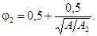
(3.2)3.2.5 При определении усилий для расчета колонн, стен и фундаментов, воспринимающих нагрузки от двух перекрытий и более, полные нормативные значения нагрузок, указанные в пп. 1, 2, 4, 11, 12а и 12б таблице 3.3, следует снижать умножением на коэффициенты сочетания φ3 или φ4.
а) для помещений, указанных в п.п. 1, 2, 12а
б) для помещений, указанных в п.п. 4, 11, 12б
где
φ1, φ2 - определяются в соответствии с п. 3.2.4;
п - общее число перекрытий, нагрузки от которых учитываются при расчете рассматриваемого сечения колонны, стены, фундамента.
3.3.1 Несущие элементы перекрытий, покрытий, лестниц и балконов (лоджий) должны быть проверены на сосредоточенную вертикальную нагрузку, приложенную к элементу, в неблагоприятном положении на квадратной площадке со сторонами не более 10 см (при отсутствии других временных нагрузок). Если в строительном задании на основании технологических решений не предусмотрены более высокие нормативные значения сосредоточенных нагрузок, их следует принимать равными:
а) для перекрытий и лестниц - 1,5 кН;
б) для чердачных перекрытий, покрытий, террас и балконов - 1,0 кН;
в) для покрытий, по которым можно передвигаться только с помощью трапов и мостиков, - 0,5 кН.
Элементы, рассчитанные на возможные при возведении и эксплуатации местные нагрузки от оборудования и транспортных средств, допускается не проверять на указанную сосредоточенную нагрузку.
3.3.2 Нормативные значения горизонтальных нагрузок на поручни перил лестниц и балконов следует принимать равными:
а) для жилых зданий, дошкольных учреждений, домов отдыха, санаториев, больниц и других лечебных учреждений - 0,3 кН/м;
б) для трибун и спортивных залов - 1,5 кН/м;
в) для других зданий и помещений при отсутствии специальных требований - 0,8 кН/м.
3.3.3 Для обслуживающих площадок, мостиков, ограждений крыш, предназначенных для непродолжительного пребывания людей, нормативное значение горизонтальной нагрузки на поручни перил следует принимать 0,3 кН/м, если по строительному заданию на основании технологических решений не требуется большее значение нагрузки.
3.3.4 Для нагрузок, указанных в поз. 3.3.1, 3.3.2 и 3.3.3, следует принимать коэффициент надежность по нагрузке gf = 1,2.
В случаях, оговоренных в нормах на проектирование конструкций, необходим также учет горизонтальных нагрузок, передаваемых на элементы несущих конструкций зданий и сооружений. Расчетные значения таких нагрузок включают собственный вес транспортных средств и полезные нагрузки, определяемыми их техническими параметрами в соответствии с паспортной документацией заводов-изготовителей. Вертикальные, горизонтальные нагрузки, способы их приложения и расположение должны определяться в каждом конкретном случае специальным расчетом.
Нормативные значения эквивалентных вертикальных равномерно распределенных нагрузок на перекрытия, покрытия и полы на грунтах автостоянок следует определять по таблице 3.4.
Таблица 3.4
|
Помещения зданий и сооружений |
Нормативные значения равномерно распределенных нагрузок Pt, кПа |
Нормативные значения сосредоточенных нагрузок Qt, кН |
|
|
1 |
Встроенные автостоянки для автомашин общим весом до 2,5 т включительно: |
||
|
площади парковки |
3,5 |
20,0 |
|
|
2 |
пандусы и подъездные пути |
5,0 |
25,0 |
|
3 |
Встроенные автостоянки для автомашин общим весом от 2,5 т до 16 т: |
||
|
площади парковки |
Не менее 5,0 |
Не менее 90,0 |
|
|
4 |
пандусы и подъездные пути |
Не менее 7,0 |
Не менее 100,0 |
|
5 |
Автостоянки для автомашин общим весом свыше 16 т: |
По строительному заданию |
|
|
Примечания: 1. Общий вес - совокупность собственного веса автомобиля и максимальной полезной нагрузки. 2. Нормативные значения нагрузок для зданий и помещений, указанных в п.п. 3, 4, следует принимать по строительному заданию на основании технологических решений. 3. Внутригаражные проезды (за исключением пандусов) следует относить к площадям парковки в тех случаях, когда они не доступны для проезда постороннего автотранспорта. |
|||
3.4.2 Допускается уточнять расчетные значения нагрузок в соответствии с техническими данными транспортных средств.
3.4.3 Пониженные значения равномерно распределенных нагрузок от транспортных средств (см. п. 1.1.2) следует устанавливать умножением их нормативных значений на коэффициент 0,35.
3.4.4 Для нагрузок, указанных в п. 3.4.1, следует принимать коэффициент надежности по нагрузке gf = 1,2.
4.1 Нагрузки от мостовых и подвесных кранов следует определять в зависимости от групп режимов их работы, устанавливаемых ГОСТ 25546, от вида привода и от способа подвеса груза. Примерный перечень мостовых и подвесных кранов разных групп режимов работы приведен в приложении А.1.
Примечание. Под крановым путем понимаются обе балки, несущие один мостовой кран, и все балки, несущие один подвесной кран (две балки - при однопролетном, три - при двухпролетном подвесном кране и т.п.).
4.3 Нормативное значение горизонтальной нагрузки, направленной вдоль кранового пути и вызываемой торможением моста электрического крана, следует принимать равным 0,1 полного нормативного значения вертикальной нагрузки на тормозные колеса рассматриваемой стороны крана.
- для кранов с гибким подвесом груза - 0,05 суммы подъемной силы крана и веса тележки;
- для кранов с жестким подвесом груза - 0,1 суммы подъемной силы крана и веса тележки.
Эту нагрузку следует учитывать при расчете поперечных рам зданий и балок крановых путей. При этом принимается, что нагрузка передается на одну сторону (балку) кранового пути, распределяется поровну между всеми опирающимися на нее колесами крана и может быть направлена как внутрь, так и наружу рассматриваемого пролета.
4.5 Нормативное значение горизонтальной нагрузки, направленной поперек кранового пути и вызываемой перекосами мостовых электрических кранов и непараллельностью крановых путей (боковой силой), для каждого ходового колеса крана следует принимать равным 0,2 полного нормативного значения вертикальной нагрузки на колесо.
Эту нагрузку необходимо учитывать только при расчете прочности и устойчивости балок крановых путей и их креплений к колоннам в зданиях с кранами групп режимов работы 7К, 8К. При этом принимается, что нагрузка передается на балку кранового пути от всех колес одной стороны крана и может быть направлена как внутрь, так и наружу рассматриваемого пролета здания. Нагрузку, указанную в п. 4.4, не следует учитывать совместно с боковой силой.
4.6 Горизонтальные нагрузки от торможения моста и тележки крана и боковые силы считаются приложенными в месте контакта ходовых колес крана с рельсом.
4.7 Нормативное значение горизонтальной нагрузки, направленной вдоль кранового пути и вызываемой ударом крана о тупиковый упор, следует определять в соответствии с указаниями, приведенными в приложении А.2. Эту нагрузку необходимо учитывать только при расчете упоров и их креплений к балкам кранового пути.
4.8 Коэффициент надежности по нагрузке для крановых нагрузок следует принимать: для кранов групп режимов 7К, 8К gf = 1,2, для кранов групп режимов 1К - 6К gf = 1,1.
1,6 - для группы режима работы кранов 8К с жестким подвесом груза;
1,4 - для группы режима работы кранов 8К с гибким подвесом груза и для кранов группы режима работы 7К;
1,2 - для остальных групп режимов работы кранов.
4.10 При проверке местной устойчивости стенок балок значение коэффициента надежности по нагрузке следует принимать равным 1,2.
4.11 При расчете прочности и устойчивости балок кранового пути и их креплений к несущим конструкциям расчетные значения вертикальных крановых нагрузок следует умножать на коэффициент динамичности, равный:
при шаге колонн не более 12 м:
1,2 - для группы режима работы мостовых кранов 7К и 8К;
1,1 - для групп режимов работы мостовых кранов 6К, а также для всех групп режимов работы подвесных кранов;
при шаге колонн свыше 12 м:
1,1 - для группы режима работы мостовых кранов 7К и 8К.
Расчетные значения горизонтальных нагрузок от мостовых кранов группы режима работы 7К следует учитывать с коэффициентом динамичности, равным 1,1, 8К - 1,2.
В остальных случаях коэффициент динамичности принимается равным 1,0.
При расчете конструкций на выносливость, проверке прогибов балок крановых путей и смещений колонн, а также при учете местного действия сосредоточенной вертикальной нагрузки от одного колеса крана коэффициент динамичности учитывать не следует.
4.12 Вертикальные нагрузки при расчете прочности и устойчивости балок крановых путей следует учитывать не более чем от двух наиболее неблагоприятных по воздействию мостовых или подвесных кранов.
4.13 Вертикальные нагрузки при расчете прочности и устойчивости рам, колонн, фундаментов, а также оснований в зданиях с мостовыми кранами в нескольких пролетах (в каждом пролете на одном ярусе) следует принимать на каждом пути не более чем от двух наиболее неблагоприятных по воздействию кранов, а при учете совмещения в одном створе кранов разных пролетов - не более чем от четырех наиболее неблагоприятных по воздействию кранов.
4.14 Вертикальные нагрузки при расчете прочности и устойчивости рам, колонн, стропильных и подстропильных конструкций, фундаментов, а также оснований зданий с подвесными кранами на одном или нескольких путях следует принимать на каждом пути не более чем от двух наиболее неблагоприятных по воздействию кранов. При учете совмещения в одном створе подвесных кранов, работающих на разных путях, вертикальные нагрузки следует принимать:
не более чем от двух кранов:
- для колонн, подстропильных конструкций, фундаментов и оснований крайнего ряда при двух крановых путях в пролете;
не более чем от четырех кранов:
- для колонн, подстропильных конструкций, фундаментов и оснований среднего ряда;
- для колонн, подстропильных конструкций, фундаментов и оснований крайнего ряда при трех крановых путях в пролете;
- для стропильных конструкций при двух или трех крановых путях в пролете.
4.15 Горизонтальные нагрузки при расчете прочности и устойчивости балок крановых путей, колонн, рам, стропильных и подстропильных конструкций, фундаментов, а также оснований следует учитывать не более чем от двух наиболее неблагоприятных по воздействию кранов, расположенных на одном крановом пути или на разных путях в одном створе. При этом для каждого крана необходимо учитывать только одну горизонтальную нагрузку (поперечную или продольную).
4.16 Число кранов, учитываемое в расчетах прочности и устойчивости при определении вертикальных и горизонтальных нагрузок от мостовых кранов на двух или трех ярусах в пролете, при одновременном размещении в пролете как подвесных, так и мостовых кранов, а также при эксплуатации подвесных кранов, предназначенных для передачи груза с одного крана на другой с помощью перекидных мостиков, следует принимать по строительному заданию на основании технологических решений.
4.17 При определении вертикальных и горизонтальных прогибов балок крановых путей, а также горизонтальных смещений колонн нагрузку следует учитывать от одного наиболее неблагоприятного по воздействию крана.
4.18 При наличии на крановом пути одного крана и при условии, что второй кран не будет установлен во время эксплуатации сооружения, нагрузки на этом пути должны быть учтены только от одного крана.
4.19. При учете двух кранов нагрузки от них необходимо умножать на коэффициент сочетаний:
yl = 0,85 - для групп режимов работы кранов 1К - 6К;
yl = 0,95 - для групп режимов работы кранов 7К, 8К.
При учете четырех кранов нагрузки от них необходимо умножать на коэффициент сочетаний:
yl = 0,7 - для групп режимов работы кранов 1К - 6К;
yl = 0,8 - для групп режимов работы кранов 7К, 8К.
При учете одного крана вертикальные и горизонтальные нагрузки от него необходимо принимать без снижения.
4.20 Пониженные значения крановых нагрузок определяются умножением нормативного значения вертикальной нагрузки от одного крана (см. п. 4.2) в каждом пролете здания на коэффициент: 0,5 - для групп режимов работы кранов 4К - 6К; 0,6 - для группы режима работы кранов 7К; 0,7 - для группы режима работы кранов 8К. Группы режимов работы кранов принимаются по ГОСТ 25546.
4.21. При расчете на выносливость балок крановых путей под электрические мостовые краны и креплений этих балок к несущим конструкциям следует учитывать пониженные значения нагрузок в соответствии с п. 4.20, и при этом для проверки выносливости стенок балок в зоне действия сосредоточенной вертикальной нагрузки от одного колеса крана пониженные значения вертикального усилия колеса следует умножать на коэффициент, учитываемый при расчете прочности балок крановых путей в соответствии с п. 4.9. Группы режимов работы кранов, при которых следует производить расчет на выносливость, устанавливаются нормами на конструкции.
5.1 Нормативное значение снеговой нагрузки на горизонтальную проекцию покрытия следует определять по формуле
S0 = 0,7cectmSg, (5.1)
где
Sg - вес снегового покрова на 1 м2 горизонтальной поверхности земли, принимаемый в соответствии с п. 5.2;
сe - коэффициент, учитывающий снос снега с покрытий зданий под действием ветра или иных факторов, принимаемый в соответствии с п. 5.5;
сt - термический коэффициент, принимаемый в соответствии с п. 5.6;
m - коэффициент перехода от веса снегового покрова земли к снеговой нагрузке на покрытие, принимаемый в соответствии с п. 5.4.
5.2 Вес снегового покрова Sg на 1 м2 горизонтальной поверхности земли следует принимать в зависимости от снегового района Российской Федерации по данным таблице 5.1.
Таблица 5.1
|
I |
II |
III |
IV |
V |
VI |
VII |
VIII |
|
|
Sg, кПа |
0,8 |
1,2 |
1,8 |
2,4 |
3,2 |
4,0 |
4,8 |
5,6 |
В горных и малоизученных районах, обозначенных на карте 1 приложения Е, в пунктах с высотой над уровнем моря более 1500 м, в местах со сложным рельефом, а также при существенном отличии местных данных от приводимых в таблице 5.1 вес снегового покрова следует устанавливать на основе данных органа по гидрометеорологии. При этом значение Sg следует принимать как превышаемый в среднем один раз в 25 лет ежегодный максимум веса снегового покрова, определяемый на основе данных маршрутных снегосъемок о запасах воды на защищенных от прямого воздействия ветра участках (в лесу под кронами деревьев или на лесных полянах) за период не менее 20 лет.
5.3 В расчетах необходимо рассматривать схемы как равномерно распределенных, так и неравномерно распределенных снеговых нагрузок, образуемых на покрытиях вследствие перемещения снега под действием ветра или других факторов, в их наиболее неблагоприятных расчетных сочетаниях.
5.4 Схемы распределения снеговой нагрузки и значения коэффициента m следует принимать в соответствии с приложением Б, при этом промежуточные значения коэффициента m определяются линейной интерполяцией.
В тех случаях, когда более неблагоприятные условия работы элементов конструкций возникают при частичном загружении покрытия, следует рассматривать схемы со снеговой нагрузкой, действующей на половине или четверти его площади (для покрытий с фонарями - на участках шириной b).
Примечания:
1. В необходимых случаях снеговые нагрузки следует определять с учетом предусмотренного дальнейшего расширения здания.
2. В тех случаях, когда в приложении Б не приводятся схемы распределения снеговой нагрузки по покрытиям рассматриваемого типа, их необходимо определять по данным испытаний или на основе специально разработанных рекомендаций.
3. Нормативное значение снеговой нагрузки S0 на схемах приложения Б следует принимать без учета коэффициентов сe, сt и m.
5.5 Для пологих (с уклонами до 12 % или с f/l £ 0,05) покрытий однопролетных и многопролетных зданий без фонарей, проектируемых в районах со средней скоростью ветра за три наиболее холодных месяца V ³ 2 м/с (см. схемы 1, 2, 5 и 6 приложения Б), следует установить коэффициент сноса снега
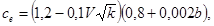
(5.2)где
k - принимается по таблице 6.2;
b - ширина покрытия, принимаемая не более 100 м.
Для покрытий с уклонами от 12 до 20 % однопролетных и многопролетных зданий без фонарей, проектируемых в районах с V ³ 4 м/с (см. схемы 1 и 5 приложения Б) следует установить коэффициент сноса
ce = 0,85. (5.3)
Средняя скорость ветра V за три наиболее холодных месяца принимается по карте 2 обязательного приложения Е.
Для купольных сферических и конических покрытий зданий на круглом плане, регламентируемых схемами 13, 14 приложения Б, при задании равномерно распределенной снеговой нагрузки значения коэффициента ce следует устанавливать в зависимости от диаметра d основания купола:
ce = 0,85 при d ≤ 60 м;
ce = 1,0 при d > 100 м;
ce = 0,85 + 0,00375(d - 60) - в промежуточных случаях.
Снижение снеговой нагрузки, предусматриваемое настоящим пунктом, не распространяется:
а) на покрытия зданий в районах со среднемесячной температурой воздуха в январе выше минус 5 °С (см. карту 5 приложения Е);
б) на покрытия зданий, защищенных от прямого воздействия ветра соседними более высокими зданиями, удаленными менее чем на 10h1, где h1 - разность высот соседнего и проектируемого зданий;
в) на участки покрытий длиной b, b1 и b2, у перепадов высот зданий и парапетов (см. схемы 8 - 11 приложения Б).
В остальных случаях, не указанных настоящим пунктом, следует принимать
ce = 1,0. (5.4)
ct = 0,8. (5.5)
В остальных случаях
ct = 1,0. (5.6)
5.7 Для районов со средней температурой января минус 5 °С и ниже (по карте 5 приложения Е) пониженное нормативное значение снеговой нагрузки (см. п. 1.1.2) определяется умножением её нормативного значения на коэффициент 0.7.
Для районов со средней температурой января выше минус 5 °С пониженное значение снеговой нагрузки принимается равным ее нормативному значению.
5.8 Коэффициент надежности по снеговой нагрузке gf следует принимать равным 1,4.
Для зданий и сооружений необходимо учитывать следующие воздействия ветра:
а) расчетную ветровую нагрузку;
б) пиковые значения расчетной ветровой нагрузки, действующие на конструктивные элементы ограждения и элементы их крепления;
в) резонансное вихревое возбуждение;
г) аэродинамические неустойчивые колебания типа галопирования, дивергенции и флаттера (см. также раздел 9).
Резонансное вихревое возбуждение и аэродинамические неустойчивые колебания типа галопирования необходимо учитывать для зданий и сплошностенчатых сооружений, у которых h/d > 10, где h - высота, d - характерный поперечный размер.
6.1.1 Нормативную ветровую нормативную нагрузку w следует задавать в одном из двух вариантов. В первом случае нагрузка w представляет собой совокупность:
а) нормального давления we, приложенного к внешней поверхности сооружения или элемента;
б) сил трения wf, направленных по касательной к внешней поверхности и отнесенных к площади ее горизонтальной (для шедовых или волнистых покрытий, покрытий с фонарями) или вертикальной проекции (для стен с лоджиями и подобных конструкций);
в) нормального давления wi, приложенного к внутренним поверхностям сооружений с проницаемыми ограждениями, с открывающимися или постоянно открытыми проемами.
Во втором случае нагрузка w рассматривается как совокупность:
а) проекций wx и wy, внешних сил в направлении осей х и y, обусловленных общим сопротивлением сооружения;
б) крутящего момента wz относительно оси z.
При разработке архитектурно-планировочных решений городских кварталов, а также при планировании возведения зданий внутри существующих городских кварталов рекомендуется провести оценку комфортности пешеходных зон в соответствии с требованиями норм (в том числе территориальных) или технических условий.
6.1.2 Нормативную ветровую нагрузку w следует определять как сумму средней wm и пульсационной wр составляющих:
w = wm + wp. (6.1)
При определении внутреннего давления wi пульсационную составляющую ветровой нагрузки допускается не учитывать.
6.1.3. Нормативное значение средней составляющей ветровой нагрузки wm в зависимости от эквивалентной высоты zе над поверхностью земли следует определять по формуле
wm = w0k(zе)c, (6.2)
где
w0 - характеристическое значение ветрового давления (см. п. 6.1.4);
k(ze) - коэффициент, учитывающий изменение ветрового давления для высоты zе (см. пп. 6.1.5 и 6.1.6);
c - аэродинамический коэффициент (см. п. 6.1.7).
6.1.4 Характеристическое значение ветрового давления w0 следует принимать в зависимости от ветрового района по данным таблице 6.1. В том случае, если характеристическое значение ветрового давления устанавливается на основе данных метеостанций Росгидромета (см. п. 1.1.5), то w0 в (Па), следует определять по формуле:
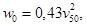
(6.3)где
v50 (Па) - давление ветра, соответствующее скорости ветра (в м/с) на уровне 10 м над поверхностью земли для местности типа А (п. 6.1.6), определяемой с 10-минутным интервалом осреднения и превышаемой в среднем один раз в 50 лет.
Таблица 6.1
|
Ia |
I |
II |
III |
IV |
V |
VI |
VII |
|
|
w0, кПа |
0,17 |
0,23 |
0,30 |
0,38 |
0,48 |
0,60 |
0,73 |
0,85 |
6.1.5 Эквивалентная высота zе определяется следующим образом:
1. Для башенных сооружений, мачт, труб и т.п. сооружений
zе = z.
2. Для зданий
а) При h ≤ d → zе = h
б) При h ≤ 2d
- для z ≥ h - d → zе = h
- для 0 < z < h - d → zе = d
в) При h > 2d
- для z ≥ h - d → ze = h
- для d < z < h- d → ze = z
- для 0 < z ≤ d → ze = d
Здесь
z - высота от поверхности земли;
d - размер здания (без учета его стилобатной части) в направлении, перпендикулярном расчетному направлению ветра (поперечный размер);
h - высота здания.
6.1.6 Коэффициент k(ze) определяется по таблице 6.2 или по формуле (6.4), в которых принимаются следующие типы местности:
А - открытые побережья морей, озер и водохранилищ, сельские местности, в том числе, с постройками, высотой менее 10 м, пустыни, степи, лесостепи, тундра;
В - городские территории, лесные массивы и другие местности, равномерно покрытые препятствиями высотой более 10 м;
С - городские районы с плотной застройкой зданиями высотой более 25 м.
Сооружение считается расположенным в местности данного типа, если эта местность сохраняется с наветренной стороны сооружения на расстоянии 30h - при высоте сооружения h до 60 м и на расстоянии 2 км - при h > 60 м.
Примечание - При определении ветровой нагрузки типы местности могут быть различными для разных расчетных направлений ветра.
Таблица 6.2
|
Высота zе, м |
Коэффициент k для типов местности |
||
|
А |
В |
С |
|
|
£ 5 |
0,75 |
0,5 |
0,4 |
|
10 |
1,0 |
0,65 |
0,4 |
|
20 |
1,25 |
0,85 |
0,55 |
|
40 |
1,5 |
1,1 |
0,8 |
|
60 |
1,7 |
1,3 |
1,0 |
|
80 |
1,85 |
1,45 |
1,15 |
|
100 |
2,0 |
1,6 |
1,25 |
|
150 |
2,25 |
1,9 |
1,55 |
|
200 |
2,45 |
2,1 |
1,8 |
|
250 |
2,65 |
2,3 |
2,0 |
|
300 |
2,75 |
2,5 |
2,2 |
|
350 |
2,75 |
2,75 |
2,35 |
|
³ 480 |
2,75 |
2,75 |
2,75 |
k(ze) = k10(ze/10)2α. (6.4)
Значения параметров k10 и α для различных типов местностей приведены в таблице 6.3.
Таблица 6.3
|
Тип местности |
|||
|
А |
В |
С |
|
|
α |
0,15 |
0,20 |
0,25 |
|
k10 |
1,0 |
0,65 |
0,4 |
|
ζ10 |
0,76 |
1,06 |
1,78 |
6.1.7 При определении компонентов ветровой нагрузки we, wf, wi, wx, wy и wz следует использовать соответствующие значения аэродинамических коэффициентов: внешнего давления сe, трения сf, внутреннего давления сi и лобового сопротивления сx, поперечной силы сy, крутящего момента сz, принимаемых по приложению В.1, где стрелками показано направление ветра. Знак «плюс» у коэффициентов сe или сi соответствует направлению давления ветра на соответствующую поверхность (активное давление), знак «минус» - от поверхности (отсос). Промежуточные значения нагрузок следует определять линейной интерполяцией.
При определении ветровой нагрузки на поверхности внутренних стен и перегородок при отсутствии наружного ограждения (на стадии монтажа) следует использовать аэродинамические коэффициенты внешнего давления се или лобового сопротивления сх.
В случаях, не предусмотренных приложением В.1 (иные формы сооружений, учет при надлежащем обосновании других направлений ветрового потока или составляющих общего сопротивления тела по другим направлениям, необходимость учета влияния близ стоящих зданий и сооружений и т.п. случаях), аэродинамические коэффициенты необходимо принимать по справочным данным или на основе результатов продувок моделей сооружений в аэродинамических трубах.
Примечания - При назначении коэффициентов сх, су и сm необходимо указать размеры сооружения, к которым они отнесены.
6.1.8. Нормативное значение пульсационной составляющей ветровой нагрузки wp на эквивалентной высоте zе следует определять следующим образом:
а) для сооружений (и их конструктивных элементов), у которых первая частота собственных колебаний f1, Гц, больше предельного значения собственной частоты fl (см. п. 6.1.10), - по формуле
где wm - определяется в соответствии с п. 6.1.3;
z(ze) - коэффициент пульсации давления ветра, принимаемый по таблице 6.4 или формуле (6.6) для эквивалентной высоты ze (cм. п. 6.1.5);
v - коэффициент пространственной корреляции пульсаций давления ветра (см. п. 6.1.11).
Таблица 6.4
|
Высота zе, м |
Коэффициент пульсаций давления ветра z для типов местности |
||
|
A |
B |
C |
|
|
£ 5 |
0,85 |
1,22 |
1,78 |
|
10 |
0,76 |
1,06 |
1,78 |
|
20 |
0,69 |
0,92 |
1,50 |
|
40 |
0,62 |
0,80 |
1,26 |
|
60 |
0,58 |
0,74 |
1,14 |
|
80 |
0,56 |
0,70 |
1,06 |
|
100 |
0,54 |
0,67 |
1,00 |
|
150 |
0,51 |
0,62 |
0,90 |
|
200 |
0,49 |
0,58 |
0,84 |
|
250 |
0,47 |
0,56 |
0,80 |
|
300 |
0,46 |
0,54 |
0,76 |
|
350 |
0,46 |
0,52 |
0,73 |
|
³ 480 |
0,46 |
0,50 |
0,68 |
z(ze) = z10(ze/10)-α. (6.6)
Значение параметров ζ10 и α для различных типов местностей приведены в таблице 6.4;
б) для всех сооружений (и их конструктивных элементов), у которых f1 < fl < f2 - по формуле
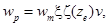
(6.7)где f2 - вторая собственная частота;
x - коэффициент динамичности, определяемый по рис. 6.1 в зависимости от параметра логарифмического декремента колебаний d (см. п. 6.1.10) и параметра ε1, который определяется формулой (6.8) для первой собственной частоты ƒ1;
Здесь
wm(zэк) - расчетное значение средней составляющей ветровой нагрузки (п. 6.1.2) на характерную высоту zэк. Для конструктивных элементов zэк - высота z, на которой он расположен; для зданий и сооружений zэк = 0,7h, где h - высота сооружений.
Рисунок 6.1 - Коэффициенты динамичности
в) для сооружений, у которых вторая собственная частота меньше предельной, необходимо производить динамический расчет с учетом s первых форм собственных колебаний. Число s следует определять из условия
ƒs < ƒl < ƒs+1
г) При расчете зданий допускается учитывать динамическую реакцию по трем низшим собственным формам колебаний (двум изгибных и одной крутильной или смешанным крутильно-изгибным).
Примечание - При расчете многоэтажных зданий высотой до 40 м и одноэтажных производственных зданий высотой до 36 м при отношении высоты к пролету менее 1,5, размещаемых в местностях типа А и В (см. п. 6.1.6), пульсационную составляющую ветровой нагрузки допускается определять по формуле (6.5).
6.1.9 Усилия и перемещения при учете динамической реакции по s собственным формам определяется по формуле
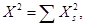
(6.9)где
X - суммарные усилия или перемещения;
Xs - усилия или перемещения по s-ой форме колебаний.
6.1.10 Предельное значение частоты собственных колебаний fl (Гц), следует определять по таблице 6.5
Таблица 6.5
|
fl, Гц |
||
|
d = 0,3 |
d = 0,15 |
|
|
Iа |
0,85 |
2,6 |
|
I |
0,95 |
2,9 |
|
II |
1,1 |
3,4 |
|
III |
1,2 |
3,8 |
|
IV |
1,4 |
4,3 |
|
V |
1,6 |
5,0 |
|
VI |
1,7 |
5,6 |
|
VII |
1,9 |
5,9 |
Рисунок 6.2 - Основная система координат при определении коэффициента корреляции v
Значение логарифмического декремента колебаний d следует принимать:
а) для железобетонных и каменных сооружений, а также для зданий со стальным каркасом при наличии ограждающих конструкций d = 0,3;
б) для стальных сооружений футерованных дымовых труб, аппаратов колонного типа, в том числе на железобетонных постаментах d = 0,15.
6.1.11 Коэффициент пространственной корреляции пульсаций давления v следует определять для расчетной поверхности сооружения или отдельной конструкции, на которой учитывается корреляция пульсаций.
Расчетная поверхность включает в себя те части наветренных и подветренных поверхностей, боковых стен, кровли и подобных конструкций, с которых давление ветра передается на рассчитываемый элемент сооружения.
Если расчетная поверхность близка к прямоугольнику, ориентированному так, что его стороны параллельны основным осям (рис. 6.2), то коэффициент v следует определять по таблице 6.6 в зависимости от параметров r и c принимаемых по таблице 6.7.
Таблица 6.6
|
r, м |
Коэффициент v при c (в м), равных |
||||||
|
5 |
10 |
20 |
40 |
80 |
160 |
350 |
|
|
0,1 |
0,95 |
0,92 |
0,88 |
0,83 |
0,76 |
0,67 |
0,56 |
|
5 |
0,89 |
0,87 |
0,84 |
0,80 |
0,73 |
0,65 |
0,54 |
|
10 |
0,85 |
0,84 |
0,81 |
0,77 |
0,71 |
0,64 |
0,53 |
|
20 |
0,80 |
0,78 |
0,76 |
0,73 |
0,68 |
0,61 |
0,51 |
|
40 |
0,72 |
0,72 |
0,70 |
0,67 |
0,63 |
0,57 |
0,48 |
|
80 |
0,63 |
0,63 |
0,61 |
0,59 |
0,56 |
0,51 |
0,44 |
|
160 |
0,53 |
0,53 |
0,52 |
0,50 |
0,47 |
0,44 |
0,38 |
При расчете сооружения в целом размеры расчетной поверхности следует определять с учетом указаний приложения В.1, при этом для решетчатых сооружений в качестве расчетной поверхности необходимо принимать размеры расчетной поверхности по его внешнему контуру.
Таблица 6.7
|
Основная координатная плоскость, параллельно которой расположена расчетная поверхность |
r |
c |
|
zoy |
b |
h |
|
zox |
0,4а |
hп |
|
xoy |
b |
а |
6.1.12 Коэффициент надежности по ветровой нагрузке следует принимать равным 1,4.
Для элементов ограждения и узлов их крепления необходимо учитывать пиковые положительные w+ и отрицательные w- воздействия ветровой нагрузки, нормативные значения которых определяются по формуле:
w+(-) = w0k(ze)cp,+(-)n+(-), (6.10)
где w0 - расчетное значение давления ветра (п. 6.1.4);
ze - эквивалентная высота (п. 6.1.5);
k(ze) - коэффициент, учитывающий изменение давления ветра на высоте ze (п. 6.1.6);
cp,+(-) - пиковые значения аэродинамических коэффициентов положительного давления (+) или отсоса (-);
n+(-) - коэффициенты корреляции ветровой нагрузки, соответствующие положительному давлению (+) и отсосу (-); значения этих коэффициентов приведены в таблице 6.8 в зависимости от площади ограждения А, с которой собирается ветровая нагрузка.
Таблица 6.8
|
А, м2 |
< 2 |
5 |
10 |
>20 |
|
n+ |
1,0 |
0,9 |
0,8 |
0,75 |
|
n- |
1,0 |
0,85 |
0,75 |
0,65 |
Аэродинамические коэффициенты ср,+ и ср,-, как правило, определяются на основе результатов модельных испытаний сооружений в аэродинамических трубах. Для отдельно стоящих прямоугольных в плане зданий значения этих коэффициентов приведены на схеме В.1.17 приложения В.1.
Примечание - При определении пиковой ветровой нагрузки (формула 6.11) принято, что конструктивные элементы ограждения и узлы их крепления к зданию является достаточно жесткими и в них не возникает заметных динамических усилий и перемещений. В случае, собственные частоты системы «элементы ограждения - их несущие конструкции - элементы их крепления» менее 1,5 Гц расчетные значения пиковой ветровой нагрузки должны быть уточнены на основе результатов динамического расчета указанной системы конструктивных элементов.
6.3.1 Для зданий и сооружений, удовлетворяющих условию h/d > 10, необходимо проводить их поверочный расчет на резонансное вихревое возбуждение; здесь h - высота сооружения, d - его характерный поперечный размер в направлении, перпендикулярном средней скорости ветра.
6.3.2 Критические скорости ветра Vcr,i, при которых происходит резонансное вихревое возбуждение по i-ой собственной форме колебаний, определяются по формуле:
Vcr,i = ƒid/St, м/сек, (6.11)
где ƒi(Гц) - собственная частота колебаний по i-ой изгибной собственной форме;
d(м) - поперечный размер сооружения;
St - число Струхаля поперечного сечения, определяемое экспериментально или по справочным данным; для круглых поперечных сечений St = 0,2; для сечений с острыми кромками (в т.ч. и прямоугольных) - St = 0,12.
6.3.3 Резонансное вихревое возбуждение не возникает в том случае, если
Vcr,i > Vmax(zэк), (6.12)
где Vmax(zэк) - максимальная скорость ветра на уровне zэк ; определяемая по формуле:
где w0 (в Па) и K(zе) определяются в соответствии с указаниями пп. 6.1.4 и 6.1.6
Для зданий и башенных сооружений с плавно изменяющейся формой поперечного сечения, а также труб и мачт без оттяжек zэк = 0,8h.
6.3.4. Ветровые нагрузки, возникающие при резонансном вихревом возбуждении, следует определять в соответствии с указаниями приложения В.2.
При оценке комфортности пребывания людей в зданиях (динамическая комфортность) расчетные значения ветровой нагрузки wc принимаются равными:
wc = 0,7wр, (6.14)
где wр - нормативное значение пульсационной составляющей ветровой нагрузки (п. 6.1.8.).
При этом максимальное ускорение этажа здания не должно превышать величины
ас,maх = 0,08 м/с2. (6.15)
7.1 Гололедные нагрузки необходимо учитывать для воздушных линий электропередачи и связи, контактных сетей электрифицированного транспорта, антенно-мачтовых устройств, шпилей, для решетчатых ограждений балконов, стен и покрытий высотных зданий, расположенных на высоте 150 м и более, и подобных сооружений.
7.2 Нормативное значение линейной гололедной нагрузки для элементов кругового сечения диаметром до 70 мм включительно (проводов, тросов, оттяжек, мачт, вант и др.) i, Н/м, следует определять по формуле
i = pbkm1(d + bkm1)rg10-3. (7.1)
Нормативное значение поверхностной гололедной нагрузки , Па, для других элементов следует определять по формуле
b - толщина стенки гололеда, мм (превышаемая раз в 5 лет), на элементах кругового сечения диаметром 10 мм, расположенных на высоте 10 м над поверхностью земли, принимаемая по таблице 7.1, а на высоте 200 м и более - по таблице 7.2. Для других периодов повторяемости или при наличии метеорологических данных для района строительства толщину стенки гололеда следует принимать по специальным техническим условиям, утвержденным в установленном порядке;
k - коэффициент, учитывающий изменение толщины стенки гололеда по высоте и принимаемый по таблице 7.3;
d, мм - диаметр провода, троса;
m1 - коэффициент, учитывающий изменение толщины стенки гололеда в зависимости от диаметра элементов кругового сечения и определяемый по таблице 7.4;
m2 - коэффициент, учитывающий отношение площади поверхности элемента, подверженной обледенению, к полной площади поверхности элемента и принимаемый равным 0,6;
r - плотность льда, принимаемая равной 0,9 г/см3;
g, м/с2 - ускорение свободного падения.
Таблица 7.1
|
I |
II |
III |
IV |
V |
|
|
Толщина стенки гололеда b, мм |
Не менее 3 |
5 |
10 |
15 |
Не менее 20 |
Таблица 7.2
|
Толщина стенки гололеда b, мм, для разных районов |
||||
|
I района гололедности азиатской части |
V района гололедности и горных местностей |
северной части европейской территории |
остальных |
|
|
200 |
15 |
Принимается на основании специальных обследований |
Принимается по карте 4, г приложения Е |
35 |
|
300 |
20 |
То же |
То же, по карте 4д |
45 |
|
400 |
25 |
То же |
То же, по карте 4е |
60 |
Таблица 7.3
|
5 |
10 |
20 |
30 |
50 |
70 |
100 |
|
|
Коэффициент k |
0,8 |
1,0 |
1,2 |
1,4 |
1,6 |
1,8 |
2,0 |
Таблица 7.4
|
5 |
10 |
20 |
30 |
50 |
70 |
|
|
Коэффициент m1 |
1,1 |
1,0 |
0,9 |
0,8 |
0,7 |
0,6 |
|
Примечания (к таблице 7.1 - 7.4): 1. В V районе, горных и малоизученных районах, обозначенных на карте 4 приложения Е, а также в сильнопересеченных местностях (на вершинах гор и холмов, на перевалах, на высоких насыпях, в закрытых горных долинах, котловинах, глубоких выемках и т.п.) толщину стенки гололеда необходимо определять на основании данных специальных обследований и наблюдений. 2. Промежуточные значения величин следует определять линейной интерполяцией. 3. Толщину стенки гололеда на подвешенных горизонтальных элементах кругового сечения (тросах, проводах, канатах) допускается принимать на высоте расположения их приведенного центра тяжести. |
||||||
Для определения гололедной нагрузки на горизонтальные элементы круговой цилиндрической формы диаметром до 70 мм толщину стенки гололеда, приведенную в таблице 7.2, следует снижать на 10 %.
7.3 Нормативное значение ветровой нагрузки на покрытые гололедом элементы следует принимать равным 25 % нагрузки w, определяемой согласно п. 6.1.4.
Примечания.
1. В отдельных районах, где наблюдаются сочетания значительных скоростей ветра с большими размерами гололедно-изморозевых отложений, толщину стенки гололеда и его плотность, а также давление ветра следует принимать в соответствии с фактическими данными.
2. При определении ветровых нагрузок на элементы сооружений, расположенных на высоте более 100 м над поверхностью земли, диаметр обледенелых проводов и тросов, установленный с учетом толщины стенки гололеда, приведенной в таблице 7.2 необходимо умножать на коэффициент, равный 1,5.
7.4 Температуру воздуха при гололеде независимо от высоты сооружений следует принимать в горных районах с отметкой: более 2000 м - минус 15 °С, от 1000 до 2000 м - минус 10 °С; для остальной территории для сооружений высотой до 100 м - минус 5 °С, более 100 м - минус 10 °С.
Примечание - В районах, где при гололеде наблюдается температура ниже минус 15 °С, ее следует принимать по фактическим данным.
7.5 Коэффициент надежности по нагрузке gf для гололедной нагрузки следует принимать равным 1,3, за исключением случаев, оговоренных в других нормативных документах.
8.1 В случаях, предусмотренных нормами на конструкции, следует учитывать изменение во времени Dt средней температуры и перепад температуры J по сечению элемента.
8.2 Нормативные значения изменений средних температур по сечению элемента соответственно в теплое Dtw и холодное Dtc время года следует определять по формулам:
Δtw = tw - t0c; (8.1)
Δtc = tc - t0w, (8.2)
где tw, tc - нормативные значения средних температур по сечению элемента в теплое и холодное время года, принимаемые в соответствии с п. 8.3;
t0w, t0c - начальные температуры в теплое и холодное время года, принимаемые в соответствии с п. 8.6.
8.3 Нормативные значения средних температур tw и tc и перепадов температур по сечению элемента в теплое Jw и холодное Jc время года для однослойных конструкций следует определять по таблице 8.1.
Примечание - Для многослойных конструкций tw, tc, Jw, Jc определяются расчетом. Конструкции, изготовленные из нескольких материалов, близких по теплофизическим параметрам, допускается рассматривать как однослойные.
Таблица 8.1
|
Здания и сооружения в стадии эксплуатации |
|||
|
не отапливаемые здания (без технологических источников тепла) и открытые сооружения |
отапливаемые здания |
здания с искусственным климатом или с постоянными технологическими источниками тепла |
|
|
Не защищенные от воздействия солнечной радиации (в том числе наружные ограждающие) |
tw = tew + q1 + q4 |
tw = tiw + 0,6(tew - tiw) ± q2 + q4 |
|
|
Jw = q5 |
Jw = 0,8(tew - tiw) + q3 ± q5 |
||
|
tc = tec - 0,5q1 |
tc = tic + 0,6(tec - tic) - 0,5q2 |
||
|
Jc = 0 |
Jc = 0,8(tec - tic) - 0,5q3 |
||
|
Защищенные от воздействия солнечной радиации (в том числе внутренние) |
tw = tew |
tw = tiw |
|
|
Jw = 0 |
|||
|
tc = tec |
tc = tic |
||
|
Jc = 0 |
|||
|
Обозначения, принятые в таблице 8.1: tew, tec - средние суточные температуры наружного воздуха соответственно в теплое и холодное время года, принимаемые в соответствии с п. 8.4; tiw, tic - температуры внутреннего воздуха помещений соответственно в теплое и холодное время года, принимаемые по ГОСТ 12.1.005 или по заданию на проектирование с учетом технологических решений; q1, q2, q3 - приращения средних по сечению элемента температур и перепада температур от суточных колебаний температуры наружного воздуха, принимаемые по таблице 8.2; q4, q5 - приращения средних по сечению элемента температур и перепада температур от солнечной радиации, принимаемые в соответствии с п. 8.5. Примечания: 1. При наличии исходных данных о температуре конструкций в стадии эксплуатации зданий с постоянными технологическими источниками тепла значения tw, tc, Jw, Jc следует принимать на основе этих данных. 2. Для зданий и сооружений в стадии возведения tw, tc, Jw, Jc определяются как для не отапливаемых зданий в стадии их эксплуатации. |
|||
Таблица 8.2
|
Приращения температуры q, °С |
|||
|
q1 |
q2 |
q3 |
|
|
Металлические |
8 |
6 |
4 |
|
Железобетонные, бетонные, армокаменные и каменные толщиной, см: |
|||
|
до 15 |
8 |
6 |
4 |
|
от 15 до 39 |
6 |
4 |
6 |
|
свыше 40 |
2 |
2 |
4 |
8.4 Средние суточные температуры наружного воздуха в теплое tew и холодное tec время года следует определять по формулам:
tew = tVII + DVII (8.3)
tec = tI - ΔI, (8.4)
где tI, tVII - многолетние средние месячные температуры воздуха в январе и июле, принимаемые соответственно по картам 5 и 6 приложения Е;
DI, DVII - отклонения средних суточных температур от средних месячных (DI - принимается по карте 7 приложения Е, DVII = 6 °С).
Примечание - В отапливаемых производственных зданиях на стадии эксплуатации для конструкций, защищенных от воздействия солнечной радиации, DVII допускается не учитывать.
Для горных и малоизученных районов, обозначенных на картах 5 - 7 приложения Е, tec, tew определяются по формулам:
tec = tI,min + 0,5A1 (8.5)
tew = tVII, max - 0,5AVII, (8.6)
где
tI,min, tVII,max - средние из абсолютных значений соответственно минимальной температуры воздуха в январе и максимальной - в июле;
АI, АVII - средние суточные амплитуды температуры воздуха соответственно в январе и в июле при ясном небе.
tI,min, tVII,max, АI, АVII - принимаются по данным органа по гидрометеорологии.
8.5 Приращения q4 и q5 °С, следует определять по формулам:
q4 = 0,05rSmaxk (8.7)
q5 = 0,05rSmax(1 - k), (8.8)
где r - коэффициент поглощения солнечной радиации материалом наружной поверхности конструкции, принимаемый по таблице 8.3;
Smax - максимальное значение суммарной (прямой, рассеянной и отраженной) солнечной радиации, Вт ∙ ч/м2, принимаемое для горизонтальных поверхностей - по таблице 8.4, для вертикальных поверхностей различной ориентации - по таблице 8.5;
k - коэффициент, принимаемый по таблице 8.6.
Таблица 8.3 - Коэффициенты поглощения солнечной радиации материалом наружной поверхности ограждающей конструкции
|
Коэффициент поглощения солнечной радиации r |
||
|
1. |
Алюминий |
0,5 |
|
2. |
Асбоцементные листы |
0,65 |
|
3. |
Асфальтобетон |
0,9 |
|
4. |
Бетоны |
0,7 |
|
5. |
Дерево неокрашенное |
0,6 |
|
6. |
Защитный слой рулонной кровли из светлого гравия |
0,65 |
|
7. |
Кирпич глиняный красный |
0,7 |
|
8. |
Кирпич силикатный |
0,6 |
|
9. |
Облицовка природным камнем белым |
0,45 |
|
10. |
Окраска силикатная темно-серая |
0,7 |
|
11. |
Окраска известковая белая |
0,3 |
|
12. |
Плитка облицовочная керамическая |
0,8 |
|
13. |
Плитка облицовочная стеклянная синяя |
0,6 |
|
14. |
Плитка облицовочная белая или палевая |
0,45 |
|
15. |
Рубероид с песчаной посыпкой |
0,9 |
|
16. |
Сталь листовая, окрашенная белой краской |
0,45 |
|
17. |
Сталь листовая, окрашенная темно-красной краской |
0,8 |
|
18. |
Сталь листовая, окрашенная зеленой краской |
0,6 |
|
19. |
Сталь кровельная оцинкованная |
0,65 |
|
20. |
Стекло облицовочное |
0,7 |
|
21. |
Штукатурка известковая темно-серая или терракотовая |
0,7 |
|
22. |
Штукатурка цементная светло-голубая |
0,3 |
|
23. |
Штукатурка цементная темно-зеленая |
0,6 |
|
24. |
Штукатурка цементная кремовая |
0,4 |
Таблица 8.4 - Суммарная солнечная радиация (прямая и рассеянная) в июле месяце на горизонтальную поверхность при безоблачном небе, Вт ∙ ч/м2 (максимальная часовая сумма)
|
38 |
40 |
42 |
44 |
46 |
48 |
50 |
52 |
|
987 |
968 |
950 |
931 |
913 |
895 |
876 |
858 |
|
Географическая широта, град. с.ш. |
|||||||
|
54 |
56 |
58 |
60 |
62 |
64 |
66 |
68 |
|
839 |
821 |
803 |
784 |
766 |
748 |
729 |
711 |
Таблица 8.5 - Суммарная солнечная радиация (прямая, рассеянная и отраженная), поступающая в июле месяце на вертикальную поверхность при безоблачном небе, Вт ∙ ч/м2 (максимальная часовая сумма)
|
38 |
40 |
42 |
44 |
46 |
48 |
50 |
52 |
|
|
Южная ориентация |
389 |
415 |
440 |
465 |
490 |
515 |
540 |
566 |
|
Восточная и западная ориентации |
731 |
737 |
742 |
748 |
754 |
760 |
765 |
771 |
|
Северная ориентация |
209 |
209 |
205 |
203 |
204 |
206 |
211 |
219 |
|
Географическая широта, град. с.ш. |
||||||||
|
54 |
56 |
58 |
60 |
62 |
64 |
66 |
68 |
|
|
Южная ориентация |
591 |
616 |
641 |
666 |
691 |
717 |
742 |
767 |
|
Восточная и западная ориентации |
777 |
783 |
789 |
794 |
800 |
806 |
812 |
817 |
|
Северная ориентация |
228 |
240 |
254 |
270 |
288 |
309 |
331 |
356 |
Таблица 8.6
|
Коэффициент k |
|
|
Металлические |
0,7 |
|
Железобетонные, бетонные, армокаменные и каменные толщиной, см: |
|
|
до 15 |
0,6 |
|
от 15 до 39 |
0,4 |
|
свыше 40 |
0,3 |
8.6 Начальную температуру, соответствующую замыканию конструкции или ее части в законченную систему, в теплое t0w и холодное t0c время года следует определять по формулам:
t0w = 0,8tVII + 0,2tI (8.9)
t0c = 0,2tVII + 0,8tI. (8.10)
Примечание - При наличии данных о календарном сроке замыкания конструкции, порядке производства работ и др. начальную температуру допускается уточнять в соответствии с этими данными.
8.7 Температурные климатические воздействия с пониженными нормативными значениями необходимо устанавливать в соответствии с указаниями пп. 8.2 - 8.6 при условии: q1 = q2 = q3 = q4 = q5 = 0, DI = DVII = 0.
8.8 Коэффициент надежности по нагрузке gf для температурных климатических воздействий Dt и J следует принимать равным 1,1.
В необходимых случаях, предусматриваемых нормативными документами или устанавливаемых в зависимости от условий возведения и эксплуатации сооружений, следует учитывать прочие нагрузки, не включенные в настоящие нормы (специальные технологические нагрузки; вибрационные нагрузки от всех видов транспорта, влажностные и усадочные воздействия; ветровые воздействия, вызывающие аэродинамически неустойчивые колебания типа галопирования, бафтинга, дивергенции и флаттера).
Нормы настоящего раздела устанавливают предельные прогибы и перемещения несущих и ограждающих конструкций зданий и сооружений при расчете по второй группе предельных состояний независимо от применяемых строительных материалов.
Положения настоящего раздела не распространяются на сооружения гидротехнические, транспорта, атомных электростанций, а также опор воздушных линий электропередачи, открытых распределительных устройств и антенных сооружений связи.
10.1.1 При расчете строительных конструкций должно быть выполнено условие
f £ fu, (10.1)
где
f - прогиб (выгиб) и перемещение элемента конструкции (или конструкции в целом), определяемые с учетом факторов, влияющих на их значения, в соответствии с пп. 1 - 3 приложения Г.1;
fu - предельный прогиб (выгиб) или перемещение, устанавливаемые настоящими нормами.
Расчет необходимо производить исходя из следующих требований:
а) технологических (обеспечение условий нормальной эксплуатации технологического и подъемно-транспортного оборудования, контрольно-измерительных приборов и т.д.);
б) конструктивных (обеспечение целостности примыкающих друг к другу элементов конструкций и их стыков, обеспечение заданных уклонов);
в) физиологических (предотвращение вредных воздействий и ощущений дискомфорта при колебаниях);
г) эстетико-психологических (обеспечение благоприятных впечатлений от внешнего вида конструкций, предотвращение ощущения опасности).
Каждое из указанных требований должно быть выполнено при расчете независимо от других.
Ограничения колебаний конструкций следует устанавливать в соответствии с нормативными документами п. 4 приложения Г.1.
10.1.2 Расчетные ситуации, для которых следует определять прогибы и перемещения, соответствующие им нагрузки, а также требования, касающиеся строительного подъема, приведены в п. 5 приложения Г.1.
10.1.3 Прогибы элементов конструкций не ограничиваются исходя из эстетико-психологических требований, если не ухудшают внешний вид конструкций (например, мембранные покрытия, наклонные козырьки, конструкции с провисающим или приподнятым нижним поясом) или если элементы конструкций скрыты от обзора. Прогибы не ограничиваются исходя из указанных требований и для конструкций перекрытий и покрытий над помещениями с непродолжительным пребыванием людей (например, трансформаторных подстанций, чердаков).
Примечание - Для всех типов покрытий целостность кровельного ковра следует обеспечивать конструктивными мероприятиями (например, использованием компенсаторов, созданием неразрезности элементов покрытия), а не повышением жесткости несущих элементов.
10.1.4 Прогибы элементов покрытий должны быть такими, чтобы, несмотря на их наличие, был обеспечен уклон кровли не менее 1/200 в одном из направлений (кроме случаев, оговоренных в других нормативных документах).
10.1.5 Коэффициент динамичности для нагрузок от погрузчиков, электрокаров, мостовых и подвесных кранов следует принимать равным единице.
10.2.1. Предельные прогибы элементов конструкций покрытий и перекрытий, ограничиваемые исходя из технологических, конструктивных и физиологических требований, следует отсчитывать от изогнутой оси, соответствующей состоянию элемента в момент приложения нагрузки, от которой вычисляется прогиб, а ограничиваемые исходя из эстетико-психологических требований - от прямой, соединяющей опоры этих элементов (см. также п. 7 приложения Г.2.1).
10.2.2. Расстояние (зазор) от верхней точки тележки мостового крана до нижней точки прогнутых несущих конструкций покрытий (или предметов, прикрепленных к ним) должно быть не менее 100 мм.
10.2.3. Предельные прогибы для различных расчетных ситуаций приведены в приложении Г.2.2.
Для элементов конструкций зданий и сооружений, предельные прогибы и перемещения которых не оговорены настоящим и другими нормативными документами, вертикальные и горизонтальные прогибы и перемещения от постоянных, длительных и кратковременных нагрузок не должны превышать 1/150 пролета или 1/75 вылета консоли.
МОСТОВЫЕ И ПОДВЕСНЫЕ КРАНЫ РАЗНЫХ ГРУПП РЕЖИМОВ РАБОТЫ (ПРИМЕРНЫЙ ПЕРЕЧЕНЬ)
|
Краны |
Группы режимов работы |
Условия использования |
|
Ручные всех видов |
1К - 3К |
Любые |
|
С приводными подвесными талями, в том числе с навесными захватами |
Ремонтные и перегрузочные работы ограниченной интенсивности |
|
|
С лебедочными грузовыми тележками, в том числе с навесными захватами |
Машинные залы электростанций, монтажные работы, перегрузочные работы ограниченной интенсивности |
|
|
С лебедочными грузовыми тележками, в том числе с навесными захватами |
4К - 6К |
Перегрузочные работы средней интенсивности, технологические работы в механических цехах, склады готовых изделий предприятий строительных материалов, склады металлосбыта |
|
С грейферами двухканатного типа, магнитно-грейферные |
Смешанные склады, работа с разнообразными грузами |
|
|
Магнитные |
Склады полуфабрикатов, работа с разнообразными грузами |
|
|
Закалочные, ковочные, штыревые, литейные |
7К |
Цехи металлургических предприятий |
|
С грейферами двухканатного типа, магнитно-грейферные |
Склады насыпных грузов и металлолома с однородными грузами (при работе в одну или две смены) |
|
|
С лебедочными грузовыми тележками, в том числе с навесными захватами |
Технологические краны при круглосуточной работе |
|
|
Траверсные, мульдогрейферные, мульдозавалочные, для раздевания слитков, копровые, ваграночные, колодцевые |
8К |
Цехи металлургических предприятий |
|
Магнитные |
Цехи и склады металлургических предприятий, крупные металлобазы с однородными грузами |
|
|
С грейферами двухканатного типа, магнитно-грейферные |
Склады насыпных грузов и металлолома с однородными грузами (при круглосуточной работе) |
НАГРУЗКА ОТ УДАРА КРАНА О ТУПИКОВЫЙ УПОР
Нормативное значение горизонтальной нагрузки F, кН, направленной вдоль кранового пути и вызываемой ударом крана о тупиковый упор, следует определять по формуле
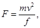
где v - скорость передвижения крана в момент удара, принимаемая равной половине номинальной, м/с;
f - возможная наибольшая осадка буфера, принимаемая равной 0,1 м для кранов с гибким подвесом груза грузоподъемностью не более 50 т групп режимов работы 1К - 7К и 0,2 м - в остальных случаях;
m - приведенная масса крана, определяемая по формуле
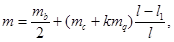
здесь
mb - масса моста крана, т;
тc - масса тележки, т;
тq - грузоподъемность крана, т;
k - коэффициент; k = 0 - для кранов с гибким подвесом; k = 1 - для кранов с жестким подвесом груза;
l - пролет крана, м;
l1 - приближение тележки, м.
Расчетное значение рассматриваемой нагрузки с учетом коэффициента надежности по нагрузке gt (см. п. 4.8) принимается не более предельных значений, указанных в таблице А1:
Таблица А.1
|
Предельные значения нагрузок F, кН |
|
|
Подвесные (ручные и электрические) и мостовые ручные |
10 |
|
Электрические мостовые: |
|
|
общего назначения групп режимов работы 1К - 3К |
50 |
|
общего назначения и специальные групп режимов работы 4К - 7К, а также литейные |
150 |
|
Специальные группы режима работы 8К с подвесом груза: |
|
|
гибким |
250 |
|
жестким |
500 |
СХЕМЫ СНЕГОВЫХ НАГРУЗОК И КОЭФФИЦИЕНТЫ m
а) Для зданий с односкатными и двускатными покрытиями (рисунок Б.1) коэффициент m определяется по таблице Б.1. Промежуточные значения определяются линейной интерполяцией.
Рисунок Б.1
Таблица Б.1
|
Уклон покрытия a, град. |
m |
|
a £ 30° |
1 |
|
a ³ 60° |
0 |
б) варианты 2 и 3 следует учитывать для зданий с двускатными покрытиями (профиль б), при этом вариант 2 - при 20° £ a £ 40°; вариант 3 - при 10° £ a £ 30° только при наличии ходовых мостиков или аэрационных устройств по коньку покрытия.
Б.2.1 Здания со сводчатыми и близкими к ним по очертанию покрытиями
Для зданий со сводчатыми и близкими к ним по очертанию покрытиями (рисунок Б.2.1) следует принимать
m1 = cos1,5a; m2 = 2sin3a, где a - уклон покрытия, град.
Рисунок Б.2.1
Б.2.2 Покрытия в виде стрельчатых арок
Для покрытий в
виде стрельчатых арок (рисунок Б.2.2) при b
³ 15°
необходимо использовать схему-рисунок Б.1, б, принимая 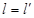
Рисунок Б.2.2
Б.3.1 Здания с продольными фонарями, закрытыми сверху
Для зданий с продольными фонарями, закрытыми сверху (рисунок Б.3.1.1), для двух схем снеговой нагрузки (рисунок Б.3.1.2) коэффициенты m следует определять как:
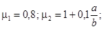
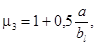
но не более:
4,0 - для ферм и балок при нормативном значении веса покрытия 1,5 кПа и менее;
2,5 - для ферм и балок при нормативном значении веса покрытия свыше 1,5 кПа; для железобетонных плит пролетом свыше 6 м, для стального профилированного настила, а также для прогонов независимо от пролета;
2,0 - для железобетонных плит покрытий пролетом 6 м и менее;
bl = hl, но не более b.
При определении нагрузки у торца фонаря для зоны B значение коэффициента m в обоих вариантах следует принимать равным 1,0.
Рисунок Б.3.1.1
Рисунок Б.3.1.2
Примечания:
1. Схемы вариантов 1, 2 (рисунок Б.3.1.2) следует также применять для двускатных и сводчатых покрытий двух или трехпролетных зданий с фонарями в середине зданий.
2. Влияние ветроотбойных щитов на распределение снеговой нагрузки возле фонарей не учитывать.
3. Для плоских скатов при b > 48 м следует учитывать местную повышенную нагрузку у фонаря, как у перепадов (см. схему Б.8, рисунок Б.8.1, Б.8.2).
Б.3.2 Здания с продольными фонарями, открытыми сверху
Для зданий с продольными фонарями, открытыми сверху (рисунок Б.3.2):
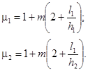
Значения b (b1, b2) и m следует определять в соответствии с указаниями к схеме Б.8; пролет l принимается равным расстоянию между верхними кромками фонарей.
Рисунок Б.3.2
Схемы рисунок Б.4 следует применять для шедовых покрытий, в том числе с наклонным остеклением и сводчатым очертанием кровли.
Рисунок Б.4
Для двух- и многопролетных зданий с двускатными покрытиями (рисунок Б.5) Вариант 2 следует учитывать при a ³ 15°.
Рисунок Б.5
Для двух- и многопролетных зданий со сводчатыми и близкими к ним по очертанию покрытиями (рисунок Б.6) вариант 2 следует учитывать при
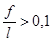
.Рисунок Б.6
a) Для пролетов с фонарем двух- и многопролетных зданий с двускатными и сводчатыми покрытиями (рисунок Б.7) коэффициент m следует принимать в соответствии с вариантами 1 и 2 схемы Б.3.1 (рисунок Б.3.1.2), для пролетов без фонаря - с вариантами 1 и 2 схем Б.5 и Б.6 (рисунок Б.5, Б.6);
б) Для
плоских двускатных (a < 15°) и сводчатых 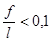
Рисунок Б.7
a) Для зданий с перепадом высоты снеговую нагрузку на верхнее покрытие следует принимать в соответствии со схемами Б.1 - Б.7, а на нижнее - в двух вариантах: по схемам Б.1 - Б.7 и схеме Б.8 (для зданий - профили «а», «б» (рисунок Б.8.1, Б.8.2), для навесов - профиль «в» (рисунок Б.8.3).
Рисунок Б.8.1
Рисунок Б.8.2
Рисунок Б.8.3
б) коэффициент m следует принимать равным:
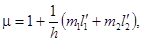
где h - высота перепада, м, отсчитываемая от карниза верхнего покрытия до кровли нижнего и при значении более 8 м принимаемая при определении m равной 8 м;
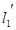 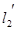
для покрытия без продольных фонарей или с поперечными фонарями -
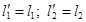
для покрытия с продольными фонарями -
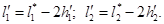
При этом l1 и l2 следует принимать не менее 0.
т1; m2 - доли снега, переносимого ветром к перепаду высот; их значения для верхнего (т1) и нижнего (m2) покрытий следует принимать в зависимости от их профиля:
0,4 - для плоского покрытия с a £ 20°, сводчатого с f/l £ 1/8;
0,3 - для плоского покрытия с a > 20°, сводчатого с f/l > 1/8 и покрытий с поперечными фонарями.
в) для пониженных покрытий шириной а < 21 м (см. рисунок Б.8.2) значение т2 следует принимать:
т2
= 0,5k1k2k3, но не менее 0,1, где 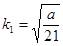 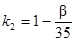 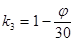
г) длину зоны повышенных снегоотложений b следует принимать равной:
при 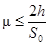
при
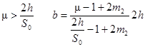
д) коэффициенты m, принимаемые для расчетов (показанные на схемах для трех вариантов), не должны превышать:
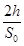
4 - если
нижнее покрытие является покрытием здания и 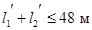
6 - если
нижнее покрытие является навесом или покрытием здания и 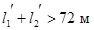
е) коэффициент m1 следует принимать: m1 = 1 - 2m2.
Примечания:
1. При d1(d2) > 12 м значение m для участка перепада длиной d1(d2) (рисунок Б.8.1) следует определять без учета влияния фонарей на повышенном (пониженном) покрытии.
2. Если пролеты верхнего (нижнего) покрытия имеют
разный профиль, то при определении m необходимо
принимать соответствующее значение m1(m2) для
каждого пролета в пределах 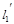 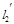
3. Местную нагрузку у перепада не следует учитывать, если высота перепада, м, между двумя смежными покрытиями менее (где S0 - в кПа).
Для зданий с двумя перепадами высот снеговую нагрузку на верхние и нижние покрытия следует принимать по схеме Б.8. Значения m1, b1, m2, b2 следует определять для каждого перепада независимо, принимая: т1 и т2 в схеме Б.9 (при определении нагрузок возле перепадов h1 и h2) соответствующими т1 в схеме Б.8 и m3 (доля снега, переносимого ветром по пониженному покрытию) соответствующим т2 в схеме Б.8.
При этом:
b3 = b1 + b2 - l3;
Рисунок Б.9
а) Снеговую нагрузку на покрытие возле парапетов следует принимать по схеме Б.10.
б) схему на рисунок Б.10 для покрытий с парапетами следует применять при (h - в м; S0 - в кПа);
, но не более 3.
в) Для плоских (a < 15°) и сводчатых покрытий при длине зоны переноса снега l > 48 м следует учитывать местную повышенную нагрузку, как у перепадов высот (см. схему Б.8) в том случае, если эта схема более неблагоприятна, чем схема Б.10.
Рисунок Б.10
а) Схема Б.11 относится к участкам с надстройками с диагональю основания не более 15 м.
б) в зависимости от рассчитываемой конструкции (плит покрытия, подстропильных и стропильных конструкций) необходимо учитывать самое неблагоприятное положение зоны повышенной нагрузки (при произвольном угле b).
в) коэффициент m для участков покрытий, примыкающие к возвышающимся над кровлей вентиляционным шахтам, зенитным фонарям и другим надстройкам (рисунок Б.11), постоянный в пределах указанной зоны, следует принимать равным:
1,0 при d £ 1,5 м;
при d > 1,5 м,
но не менее 1,0 и не более:
1,5 при 1,5 < d £ 5 м;
2,0 при 5 < d £ 10 м;
2,5 при 10 < d £ 15 м;
b1 = 2h, но не более 2d.
Наличие зенитных фонарей и надстроек с диагональю не более 5 м, возвышающихся над кровлей не более чем на 0,4 м, допускается не учитывать.
Рисунок Б.11
Для висячих покрытий цилиндрической формы (рисунок Б.12) следует принимать
Рисунок Б.12
Рисунок Б.13
а) Для зданий с купольными круговыми и близкими к ним по очертанию покрытиями (рисунок Б.13) коэффициент m1 определяется по таблице Б.2. Промежуточные значения определяются линейной интерполяцией.
Таблица Б.2
|
Уклон покрытия a, град. |
m1 |
|
a £ 30° |
1 |
|
a ³ 60° |
0 |
б) для пологих куполов с отношением f/d £ 0,05 следует учитывать только вариант 1.
в) для куполов с отношением f/d >0,05 следует учитывать варианты 1, 2 и 3, при уклонах a < 60°.
г) для варианта 2 на рисунок Б.13 следует принимать при z £ r1 µ2 = Cr1(z/r1)2sinµ, где
при z > r1 µ3 = 1,5sinµ, при a = 45°;
µ3 = 0, при a > 60°.
Промежуточные значения определяются линейной интерполяцией.
д) для варианта 3 следует принимать
Вариант 3 следует учитывать для куполов с f/d >0,05 при сильно шероховатой поверхности покрытия, наличии на нём возвышающихся надстроек, фонарей или снегозадерживающих преград, а также для покрытий, защищенных от ветра соседними более высокими зданиями или объектами окружающей застройки.
а) Для зданий с коническими круговыми покрытиями (рисунок Б.14) коэффициент m1 определяется по таблице Б.3. Промежуточные значения определяются линейной интерполяцией.
Таблица Б.3
|
Уклон покрытия a, град. |
m1 |
|
a £ 30° |
1 |
|
a ³ 60° |
0 |
б) Для пологих куполов при a £ 7° следует учитывать только вариант 1.
в) для менее пологих куполов при 7° < a £ 30° для варианта 2 следует принимать
µ2 = Cr2(z/r)sinµ, где
г) при 30° < a < 60° для варианта 2 следует принимать
µ2 = Cr2(z/r)sinµ,
Cr2 = 1,7´30°/a.
Рисунок Б.14
В.1.1.1 Отдельностоящие плоские сплошные конструкции на земле (стены, заборы и т.д.)
а) Для различных участков конструкций (рисунок В.1) коэффициент сх определяется по таблице В.1;
б) ze = h.
Рисунок В.1
Таблица В.1
|
Участки плоских сплошных конструкций на земле (см. рисунок В.1) |
|||
|
A |
B |
C |
D |
|
2,1 |
1,8 |
1,4 |
1,2 |
В.1.1.2 Рекламные щиты
а) Для рекламных щитов, поднятых над землей на высоту не менее d/4 (рисунок В.2): cx = 2,5kl, где kλ - определено в В.1.15;
Рисунок В.2
б) равнодействующую нагрузку, направленную по нормали к плоскости щита следует прикладывать на высоте его геометрического центра, с эксцентриситетом в горизонтальном направлении e = ±0,25b;
в) ze = zg + d/2.
В.1.2.1 Вертикальные стены прямоугольных в плане зданий
Таблица В.2
|
Наветренная стена |
Подветренная стена |
|||
|
Участки |
||||
|
A |
B |
C |
D |
E |
|
-1,0 |
-0,8 |
-0,5 |
0,8 |
-0,5 |
а) Для наветренных, подветренных и различных участков боковых стен (рисунок В.3) аэродинамические коэффициенты се приведены в таблице В.2;
б) для боковых стен с выступающими лоджиями аэродинамический коэффициент трения сf = 0,1.
Рисунок В.3
а) Для различных участков покрытия (рисунок В.4) коэффициент се определяется по таблице В.3а и В.3б в зависимости от направления средней скорости ветра;
б) для углов 15° ≤ β ≤ 30° при α = 0° необходимо рассмотреть два варианта распределения расчетной ветровой нагрузки;
в) для протяженных гладких покрытий при α = 90° (рисунок В.4 б) аэродинамические коэффициенты трения сf = 0,02.
Рисунок В.4
Таблица В.3а
α = 0°
|
F |
G |
H |
I |
J |
|
|
15° |
-0,9 |
-0,8 |
-0,3 |
-0,4 |
-1,0 |
|
0,2 |
0,2 |
0,2 |
|||
|
30° |
-0,5 |
-0,5 |
-0,2 |
-0,4 |
-0,5 |
|
0,7 |
0,7 |
0,4 |
|||
|
45° |
0,7 |
0,7 |
0,6 |
-0,2 |
-0,3 |
|
60° |
0,7 |
0,7 |
0,7 |
-0,2 |
-0,3 |
|
75° |
0,8 |
0,8 |
0,8 |
-0,2 |
-0,3 |
Таблица В.3б
α = 90°
|
F |
G |
H |
I |
|
|
0° |
-1,8 |
-1,3 |
-0,7 |
-0,5 |
|
15° |
-1,3 |
-1,3 |
-0,6 |
-0,5 |
|
30° |
-1,1 |
-1,4 |
-0,8 |
-0,5 |
|
45° |
-1,1 |
-1,4 |
-0,9 |
-0,5 |
|
60° |
-1,1 |
-1,2 |
-0,8 |
-0,5 |
|
75° |
-1,1 |
-1,2 |
-0,8 |
-0,5 |
Рисунок В.5
Примечание - При 0,2 ≤ f/d ≤ 0,3 и h1/l ³ 0,5 необходимо учитывать два значения коэффициента сe1.
а) Распределение аэродинамических коэффициентов по поверхности покрытия приведено на рисунок В.5;
б) аэродинамические коэффициенты для стен принимаются в соответствии с указаниям к п. В.1.2.1;
в) при определении эквивалентной высоты (п. 6.1.5) и коэффициента n в соответствии с п. 6.1.11: h = h1 + 0,7f.
а) Значения коэффициентов се в точках А и С, а так же в сечении В-В приведены на рисунок В.6. Для промежуточных сечений коэффициенты се определяются линейной интерполяцией;
б) при определении эквивалентной высоты (п. 6.1.5) и коэффициента n в соответствии с п. 6.1.11: h = h1 + 0,7f.
Рисунок В.6
а)
б)
Рисунок В.7
а) Для участков А и В (рисунок В.7) коэффициенты се следует определять в соответствии с указаниями п. В.1.2.2;
б) для фонарей участка С при l £ 2сх = 0,2; при 2 £ l £ 8 для каждого фонаря сх = 0,1l; при l > 8сх = 0,8, здесь l = a/hf;
в) для остальных участков покрытия се = -0,5;
г) для вертикальных поверхностей и стен зданий коэффициенты сe следует определять в соответствии с указаниями п. В.1.2.1;
д) при определении эквивалентной высоты ze (п. 6.1.5) и коэффициента n (п. 6.1.11) h = h1.
Рисунок В.8
а) Для наветренного фонаря коэффициент се следует определять в соответствии с указаниями В.1.2.2.
б) для остальных фонарей коэффициенты сx определяются так же, как и для участка С (п. В.1.5).
в) для остальной части покрытия се = -0,5.
г) для вертикальных поверхностей и стен зданий коэффициенты сe следует определять в соответствии с указаниями п. В.1.2.1.
д) при определении эквивалентной высоты ze (п. 6.1.5) и коэффициента n (п. 6.1.11) h = h1.
Рисунок В.9
а) Для участка А коэффициент се следует определять в соответствии с указаниями п. В.1.2.2;
б) для остальной части покрытия се = -0,5;
в) для вертикальных поверхностей и стен зданий коэффициенты сe следует определять в соответствии с указаниями В.1.2.1;
г) при определении эквивалентной высоты ze (п. 6.1.5) и коэффициента n (п. 6.1.11) h = h1.
Рисунок В.10
а) Для участка С коэффициент ce = 0,8;
б) для участков А коэффициенты се следует принимать в соответствии с указаниями В.1.2.1;
в) для участка В коэффициент ce следует определять линейной интерполяцией;
г) для остальных вертикальных поверхностей коэффициент ce необходимо определять в соответствии с указаниями п. В.1.2.1;
д) для покрытия зданий коэффициенты се определяются в соответствии с указаниями В.1.2.2, В.1.5 - В.1.6.
Рис. В.11
а) При проницаемости ограждения m £ 5 % сi1 = сi2 = ±0,2. Для каждой стены здания знак «плюс» или «минус» следует выбирать из условия реализации наиболее неблагоприятного варианта нагружения;
б) при m ³ 30 % сi1 = -0,5; сi2 = 0,8;
в) коэффициенты се на внешней поверхности следует принимать в соответствии с указаниями В.1.2.1.
Примечание - Проницаемость ограждения m следует определять как отношение суммарной площади имеющихся в нем проемов к полной площади ограждения.
Аэродинамические коэффициенты се для 4-х типов навесов (рисунок В.12) без сплошностенчатых вертикальных ограждающих конструкций определяются по таблице В.4
Рисунок В.12
Таблица В.4
|
a, град |
Значения коэффициентов |
||||
|
се1 |
се2 |
се3 |
се4 |
||
|
I |
10 |
0,5 |
-1,3 |
-1,1 |
0 |
|
20 |
1,1 |
0 |
0 |
-0,4 |
|
|
30 |
2,1 |
0,9 |
0,6 |
0 |
|
|
II |
10 |
0 |
-1,1 |
-1,5 |
0 |
|
20 |
1,5 |
0,5 |
0 |
0 |
|
|
30 |
2 |
0,8 |
0,4 |
0,4 |
|
|
III |
10 |
1,4 |
0,4 |
- |
- |
|
20 |
1,8 |
0,5 |
- |
- |
|
|
30 |
2,2 |
0,6 |
- |
- |
|
|
IV |
10 |
1,3 |
0,2 |
- |
- |
|
20 |
1,4 |
0,3 |
- |
- |
|
|
30 |
1,6 |
0,4 |
- |
- |
|
Примечания.
1. Коэффициенты се1, се2, се3, се4 соответствуют к суммарному давлению на верхнюю и нижнюю поверхности навесов;
2. Для отрицательных значений се1, се2, се3, се4 направление давления на схемах следует изменять на противоположное;
3. Для навесов с волнистыми покрытиями аэродинамический коэффициент трения сf = 0,04.
Рисунок В.13
а) Аэродинамические коэффициенты лобового сопротивления сх сферы при zg > d/2 (рисунок В.13) приведены на рисунок В.14, в зависимости от числа Рейнольдса Re и относительной шероховатости d = D/d, где D (м) - шероховатость поверхности, (см. В.1.15) При zg < d/2, коэффициент cx следует увеличить в 1,6 раз.
б) Коэффициент подъемной силы сферы cz принимается равным:
при zg > b/2 - cz = 0;
при zg < b/2 - cz = 0,6.
в) Эквивалентная высота (п. 6.1.5):
ze = zg + d/2;
г) При определении коэффициента n в соответствии с п. 6.1.11 следует принимать:
b = h = 0,7d;
д) Число Рейнольдса Re определяется по формуле:
где d (м) - диаметр сферы;
w0 (Па) - определяется в соответствии с п. 6.1.4;
ze (м) - эквивалентная высота;
k(ze) - определяется в соответствии с п. 6.1.6
Рисунок В.14
а) Аэродинамический коэффициент се1 внешнего давления определяется по формуле:
где kλ1 = 1 при cb > 0; для cb < 0 - kλ1 = kλ, определено в В.1.15.
Распределение коэффициентов cb по поверхности цилиндра при d = D/d < 5 ∙ 10-4 (см. В.1.16) приведены на рисунок В.16 для различных чисел Рейнольдса Re. Значение указанных на этом рисунке углов βmin и βb, а так же соответствующее им значение коэффициентов сmin и сb приведены в таблице В.5;
б) значения аэродинамических коэффициентов давления сe2 и ci (рисунок В.14) приведены в таблице В.6. Коэффициент сi следует учитывать для опущенного покрытия («плавающая кровля»), а также при отсутствии покрытия;
в) аэродинамические коэффициенты лобового сопротивления определяются по формуле
где kλ - определено в В.1 в зависимости от относительного удлинения сооружения (см. п. В.1.15). Значения коэффициентов сх∞ приведены на рисунок В.17 в зависимости от числа Рейнольдса Re и относительной шероховатости D = d/d (см. п. В.1.16);
Рисунок В.15
Рисунок В.16
Таблица В.5
|
βmin |
cmin |
βb |
cb |
|
|
5 ∙ 105 |
85 |
-2,2 |
135 |
-0,4 |
|
2 ∙ 106 |
80 |
-1,9 |
120 |
-0,7 |
|
107 |
75 |
-1,5 |
105 |
-0,8 |
Таблица В.6
|
h/d |
1/6 |
1/4 |
1/2 |
1 |
2 |
³ 5 |
|
сe2, ci |
-0,5 |
-0,55 |
-0,7 |
-0,8 |
-0,9 |
-1,05 |
Рисунок В.17
г) для проводов и тросов (в том числе покрытых гололедом) сх = 1,2;
д) аэродинамические коэффициенты наклонных элементов (рисунок В.18) определяются по формуле:
сxβ = сxsin2βsin2θ,
где сх - определяется в соответствии с данными рисунок В.17;
ось х параллельна скорости ветра V;
ось z направлена вертикально вверх;
β - угол между проекцией элемента на плоскость XY и осью x;
θ - угол между осью элемента и осью z;
Рисунок В.18
е) при определении коэффициента n в соответствии с п. 6.1.11:
b = 0,7d ; h = h1 + 0,7f;
ж) число Рейнольдса Re определяется по формуле, приведенной в п. В.1.11,
где ze = 0,8h для вертикально расположенных сооружений;
ze равно расстоянию от поверхности земли до оси горизонтально расположенного сооружения.
а) Аэродинамические коэффициенты лобового сопротивления призматических сооружений определяются по формуле:
где kλ определено в п. В.1.15 в зависимости от относительного удлинения сооружения λe.
б) значения коэффициента для прямоугольных сечений приведены на рисунок В.19, а для n-угольных сечений и конструктивных элементов (профилей) - в таблице В.7.
Таблица В.7
|
b, град |
n (число сторон) |
при Re > 4 ∙ 105 |
|
|
Правильный многоугольник
|
Произвольный |
5 |
1,8 |
|
6 - 8 |
1,5 |
||
|
10 |
1,2 |
||
|
12 |
1,0 |
Рисунок В.19
а) Аэродинамические коэффициенты решетчатых конструкций отнесены к площади граней пространственных ферм (п. В.1.14.3) или площади контура плоских ферм (п. В.1.14.1 и п. В.1.14.2).
б) направление оси х для плоских ферм совпадает с направлением ветра и перпендикулярно плоскости конструкции; для пространственных ферм расчетные направления ветра показаны в таблице В.8.
где cxi - аэродинамический коэффициент i-го элемента конструкций, определяемый в соответствии с указаниями п. В.1.13 для профилей и В.1.12, в для трубчатых элементов; при этом kλ = 1;
Аi - площадь проекции i-го элемента конструкции;
Аk - площадь, ограниченная контуром конструкции.
Рисунок В.20
В.1.14.2 Ряд плоских параллельно расположенных решетчатых конструкций
Рисунок В.21
а) для наветренной конструкции коэффициент сх1 определяется также, как для отдельно стоящей фермы (п. В.1.14.1);
б) для второй и последующих конструкций сх2 = сх1h;
в) для ферм из профилей из труб при Re < 4 ∙ 105 коэффициент η определяется по таблице В.8 в зависимости относительно расстояния между фермами b/h (рисунок В.19) и коэффициента проницаемости ферм
Таблица В.8
|
b/h |
|||||
|
1/2 |
1 |
2 |
4 |
6 |
|
|
0,1 |
0,93 |
0,99 |
1 |
1 |
1 |
|
0,2 |
0,75 |
0,81 |
0,87 |
0,9 |
0,93 |
|
0,3 |
0,56 |
0,65 |
0,73 |
0,78 |
0,83 |
|
0,4 |
0,38 |
0,48 |
0,59 |
0,65 |
0,72 |
|
0,5 |
0,19 |
0,32 |
0,44 |
0,52 |
0,61 |
|
0,6 |
0 |
0,15 |
0,3 |
0,4 |
0,5 |
г) для ферм из труб при Re ³ 4 ∙ 105 h = 0,95.
Примечание - Число Рейнольдса Re следует определять по формуле см. В.1.11, где d - средний диаметр трубчатых элементов.
В.1.14.3 Решетчатые башни и пространственные фермы
Рисунок В.22
Аэродинамические коэффициенты сt решетчатых башен и пространственных ферм определяются по формуле:
сt = cх(1 + h)k1,
где cх - определяется так же, как для отдельно стоящей фермы (п. В.1.14.1);
h - определяется так же как для ряда плоских ферм (п. В.1.14.2).
Значения коэффициента k1 приведены в таблице В.9.
Таблица В.9
Значения коэффициента kλ в зависимости от относительного удлинения λе элемента или сооружения приведены на рисунок В.23. Относительное удлинение λе зависит от параметра λ = l/b и определяется по таблице В.10; степени проницаемости φ определена в п. В.1.14.2
Рисунок В.23
Таблица В.10
|
le = l/2 |
le = l |
le = 2l |
|
|
|
|
|
Примечание - l, b - соответственно максимальный и минимальный размеры сооружения или его элемента в плоскости, перпендикулярной направлению ветра. |
||
Значения коэффициента Δ, характеризующего шероховатость поверхностей конструкций, в зависимости от их обработки и материала, из которого они изготовлены, приведены в таблице В.11.
Таблица В.11
|
Относительная шероховатость Δ, мм |
Тип поверхности |
Относительная шероховатость Δ, мм |
|
|
стекло |
0,0015 |
оцинкованная сталь |
0,2 |
|
полированный металл |
0,002 |
шлифованный бетон |
0,2 |
|
тонкомолотая масляная краска |
0,006 |
шероховатый бетон |
1,0 |
|
распыленная краска |
0,02 |
ржавчина |
2,0 |
|
литейный чугун |
0,2 |
каменная кладка |
3,0 |
а) Для стен прямоугольных в плане зданий пиковое положительное значение аэродинамического коэффициента сp,+ = 1,2;
б) пиковые положительного значения аэродинамического коэффициента сp,- для стен и плоских покрытий (рисунок В.24) приведены в таблице В.12.
Таблица В.12
Рисунок В.24
РЕЗОНАНСНОЕ ВИХРЕВОЕ ВОЗБУЖДЕНИЕ
В.2.1 Для однопролетных сооружений и конструктивных элементов интенсивность воздействия F(z), действующего при резонансном вихревом возбуждении по i-ой собственной форме в направлении, перпендикулярном средней скорости ветра, определяется по формуле:
Fi(z) = 0,8pVcr,i2cyji(z)d/d, Н/м (В.2.1)
где d, м - размер сооружения или конструктивного элемента в направлении, перпендикулярном средней скорости ветра;
Vcr,i, м/с - см. п. 6.3.2;
cy - аэродинамический коэффициент поперечной силы;
d - логарифмический декремент колебаний; принимаемый равным:
δ = 0,05 - для металлических сооружений; δ = 0,1 - для железобетонных сооружений.
z - координата, изменяющаяся вдоль оси сооружения;
ji(z) - i-ая форма собственных колебаний в поперечном направлении, удовлетворяющая условию
max[j(z)] = 1. (В.2.2.)
В.2.2 Аэродинамические коэффициенты су поперечной силы определяются следующим образом:
а) Для круглых поперечных сечений су = 0,3;
б) для прямоугольных поперечных сечений при в/d > 0,5
су = 1,1 для Vcr,i/Vmax(zэк) < 0,8;
сy = 0,6 для Vcr,i/Vmax(zэк) ≥ 0,8,
Здесь в - размер сооружения в направлении средней скорости ветра.
При в/d ≤ 0,5 расчет на резонансное вихревое возбуждение допускается не проводить.
В.2.3 При расчете сооружения на резонансной вихревое возбуждение наряду с воздействием (В.2.1) необходимо учитывать также действие ветровой нагрузки, параллельной средней скорости ветра. Среднюю wm,cr и пульсационную wр,cr составляющие этого воздействия определяется по формулам:
wm,cr = (Vcr/Vmax)2wm, wp,cr = (Vcr/Vmax)2wр (В.2.4)
где
Vmax - расчетная скорость ветра на высоте zэк, на которой происходит резонансное вихревое возбуждение, определяемая по формуле (6.13);
wm и wр - расчетные значения средней и пульсационной составляющих ветровой нагрузки, определяемые в соответствии с указаниями п. 6.1.
В.2.4 Критические скорости Vcr,i могут иметь достаточно большую повторяемость в течение расчетного срока эксплуатации сооружения и, в связи с этим, резонансное вихревое возбуждение может привести к накоплению усталостных повреждений.
Для предотвращения резонансного вихревого возбуждения могут быть использованы различные конструктивные мероприятия: установка вертикальных и спиралевидных ребер, перфорация ограждения и установка соответствующим образом настроенных гасителей колебаний.
ОПРЕДЕЛЕНИЕ ПРОГИБОВ И ПЕРЕМЕЩЕНИЙ
Г.1.1 При определении прогибов и перемещений следует учитывать все основные факторы, влияющие на их значения (неупругие деформации материалов, образование трещин, учет деформированной схемы, учет смежных элементов, податливость узлов сопряжения и оснований). При достаточном обосновании отдельные факторы можно не учитывать или учитывать приближенным способом.
Г.1.2 Для конструкций из материалов, обладающих ползучестью, необходимо учитывать увеличение прогибов во времени. При ограничении прогибов исходя из физиологических требований следует учитывать только кратковременную ползучесть, проявляемую сразу после приложения нагрузки, а исходя из технологических и конструктивных (за исключением расчета с учетом ветровой нагрузки) и эстетико-психологических требований - полную ползучесть.
Г.1.3 При определении прогибов колонн одноэтажных зданий и эстакад от горизонтальных крановых нагрузок расчетную схему колонн следует принимать с учетом условий их закрепления, считая, что колонна:
а) в зданиях и крытых эстакадах не имеет горизонтального смещения на уровне верхней опоры (если покрытие не создает жесткого в горизонтальной плоскости диска, следует учитывать горизонтальную податливость этой опоры);
б) в открытых эстакадах рассматривается как консоль.
Г.1.4 При наличии в зданиях (сооружениях) технологического и транспортного оборудований, вызывающих колебания строительных конструкций, и других источниках вибраций предельные значения виброперемещений, виброскорости и виброускорения следует принимать в соответствии с: ГОСТ 12.1.012, МГСН 2.04, СН 2.2.4/2.1.8.566.
При наличии высокоточного оборудования и приборов, чувствительных к колебаниям конструкций, на которых они установлены, предельные значения виброперемещений, виброскорости, виброускорения следует определять в соответствии со специальными техническими условиями.
Г.1.5 Расчетные ситуации, для которых необходимо определять прогибы и перемещения и соответствующие им нагрузки, следует принимать в зависимости от того, исходя, из каких требований производится расчет.
Расчетная ситуация характеризуется расчетной схемой конструкции, видами нагрузок, значениями коэффициентов условий работы и коэффициентов надежности, перечнем предельных состояний, которые следует рассматривать в данной ситуации.
Если расчет производится исходя из технологических требований, расчетная ситуация должна соответствовать действию нагрузок, влияющих на работу технологического оборудования.
Если расчет производится исходя из конструктивных требований, расчетная ситуация должна соответствовать действию нагрузок, которые могут привести к повреждению смежных элементов в результате значительных прогибов и перемещений.
Если расчет производится исходя из физиологических требований, расчетная ситуация должна соответствовать состоянию, связанному с колебаниями конструкций, и при этом необходимо учитывать нагрузки, влияющие на колебания конструкций, ограничиваемые требованиями настоящих норм и нормативных документов, указанных в п. Г.1.4.
Если расчет производится исходя из эстетико-психологических требований, расчетная ситуация должна соответствовать действию постоянных и длительных нагрузок.
Для конструкций покрытий и перекрытий, проектируемых со строительным подъемом при ограничении прогиба эстетико-психологическими требованиями, определяемый вертикальный прогиб следует уменьшать на размер строительного подъема.
Зазор между нижней поверхностью элементов покрытий и перекрытий и верхом перегородок, расположенных под элементами, как правило, не должен превышать 40 мм. В тех случаях, когда выполнение указанных требований связано с увеличением жесткости покрытий и перекрытий, необходимо конструктивными мероприятиями избегать этого увеличения (например, размещением перегородок не под изгибаемыми балками, а рядом с ними).
Г.1.7 При наличии между стенами капитальных перегородок (практически такой же высоты, как и стены) значения l в позиции 2а таблице Г.1. следует принимать равными расстояниям между внутренними поверхностями несущих стен (или колонн) и этими перегородками (или между внутренними поверхностями перегородок, рисунок Г.1).
Рис. Г.1 - Схемы для определения значений l (l1, l2, l3) при наличии между стенами капитальных перегородок
а -
одной в пролете; б - двух в пролете; 1 - несущие стены (или колонны);
2 - капитальные перегородки; 3 - перекрытие (покрытие) до
приложения нагрузки;
4 - перекрытие (покрытие) после приложения нагрузки; 5 - линии
отсчета прогибов; 6 - зазор
Г.1.8 Прогибы стропильных конструкций при наличии подвесных крановых путей (см. таблице Г.1., позиция 2г следует принимать как разность между прогибами f1 и f2 смежных стропильных конструкций (рис. Г.2).
Г.1.9 Горизонтальные перемещения каркаса следует определять в плоскости стен и перегородок, целостность которых должна быть обеспечена.
При связевых каркасах многоэтажных зданий высотой более 40 м перекос этажных ячеек, примыкающих к диафрагмам жесткости, равный f1/hs + f2/l (рис. Г.3), не должен превышать (см. таблице Г.4); 1/300 для позиции 2, 1/500 - для позиции 2а и 1/700 - для позиции 2б.
Рис. Г.2 - Схема для определения прогибов стропильных конструкций при наличии подвесных крановых путей
1 - стропильные конструкции, 2 - балка
подвесного кранового пути;
3 - подвесной кран; 4 - исходное положение стропильных
конструкций;
f1 - прогиб наиболее нагруженной стропильной конструкции;
f2 -
прогибы смежных с наиболее нагруженной стропильных конструкций
Рис. Г.3 - Схема перекоса этажных ячеек 2,
примыкающих к диафрагмам жесткости 1 в зданиях со связевым каркасом
(пунктиром показана исходная схема каркаса до приложения нагрузки)
ПРЕДЕЛЬНЫЕ ПРОГИБЫ
Вертикальные предельные прогибы элементов конструкций и нагрузки, от которых следует определять прогибы, приведены в таблице Г.1. Требования к зазорам между смежными элементами приведены в п. Г.1.6 приложения Г.1.
Таблица Г.1
|
Предъявляемые требования |
Вертикальные предельные прогибы fu |
Нагрузки для определения вертикальных прогибов |
|
|
1 Балки крановых путей под мостовые и подвесные краны, управляемые: |
|||
|
с пола, в том числе тельферы (тали) |
Технологические |
l/250 |
От одного крана |
|
из кабины при группах режимов работы (по ГОСТ 25546-82): |
Физиологические и технологические |
||
|
1К - 6К |
l/400 |
То же |
|
|
7К |
l/500 |
« |
|
|
8К |
l/600 |
« |
|
|
2 Балки, фермы, ригели, прогоны, плиты, настилы (включая поперечные ребра плит и настилов): |
|||
|
а) покрытий и перекрытий, открытых для обзора, при пролете l, м: |
Эстетико-психологические |
Постоянные и длительные |
|
|
l £ 1 |
l/120 |
||
|
l = 3 |
l/150 |
||
|
l = 6 |
l/200 |
||
|
l = 24 (12) |
l/250 |
||
|
l ³ 36 (24) |
l/300 |
||
|
б) покрытий и перекрытий при наличии перегородок под ними |
Конструктивные |
Принимаются в соответствии с п. 6 приложения Г1 |
Приводящие к уменьшению зазора между несущими элементами конструкций и перегородками, расположенными под элементами |
|
в) покрытий и перекрытий при наличии на них элементов, подверженных растрескиванию (стяжек, полов, перегородок) |
« |
l/150 |
Действующие после выполнения перегородок, полов, стяжек |
|
г) покрытий и перекрытий при наличии тельферов (талей), подвесных кранов, управляемых: |
|||
|
с пола |
Технологические |
l/300 или а/150 (меньшее из двух) |
Временные с учетом нагрузки от одного крана или тельфера (тали) на одном пути |
|
из кабины |
Физиологические |
l/400 или а/200 (меньшее из двух) |
От одного крана или тельфера (тали) на одном пути |
|
д) перекрытий, подверженных действию: |
Физиологические и технологические |
||
|
перемещаемых грузов, материалов, узлов и элементов оборудования и других подвижных нагрузок (в том числе при безрельсовом напольном транспорте) |
l/350 |
0.7 полных нормативных значений временных нагрузок или нагрузки от одного погрузчика (более неблагоприятное из двух) |
|
|
нагрузок от рельсового транспорта: |
|||
|
узкоколейного |
l/400 |
От одного состава вагонов (или одной напольной машины) на одном пути |
|
|
ширококолейного |
l/500 |
То же |
|
|
3 Элементы лестниц (марши, площадки, косоуры), балконов, лоджий |
Эстетико-психологические |
Те же, что в позиции 2а |
|
|
Физиологические |
Определяются в соответствии с п. Г.2.2 |
||
|
4 Плиты перекрытий, лестничные марши и площадки, прогибу которых не препятствуют смежные элементы |
« |
0,7 мм |
Сосредоточенная нагрузка 1 кН в середине пролета |
|
5 Перемычки и навесные стеновые панели над оконными и дверными проемами (ригели и прогоны остекления) |
Конструктивные |
l/200 |
Приводящие к уменьшению зазора между несущими элементами и оконным или дверным заполнением, расположенным под элементами |
|
Эстетико-психологические |
Те же, что в позиции 2а |
||
|
Обозначения, принятые в таблице Г.1: l - расчетный пролет элемента конструкции; а - шаг балок или ферм, к которым крепятся подвесные крановые пути. Примечания: 1. Для консоли вместо l следует принимать удвоенный ее вылет. 2. Для промежуточных значений l в позиции 2, а предельные прогибы следует определять линейной интерполяцией, учитывая требования п. 7 приложения Г.1. 3. В позиции 2, а цифры, указанные в скобках, следует принимать при высоте помещений до 6 м включительно. 4. Особенности вычисления прогибов по позиции 2, г указаны в п. 8 приложения Г.1. 5. При ограничении прогибов эстетико-психологическими требованиями допускается пролет l принимать равным расстоянию между внутренними поверхностями несущих стен (или колонн). |
|||
Предельные прогибы элементов перекрытий (балок, ригелей, плит), лестниц, балконов, лоджий, помещений жилых и общественных зданий, а также бытовых помещений производственных зданий, исходя из физиологических требований, следует определять по формуле
(Г.1)
где g - ускорение свободного падения;
p - нормативное значение нагрузки от людей, возбуждающих колебания, принимаемое по таблице Г.2.;
р1 - пониженное нормативное значение нагрузки на перекрытия, принимаемое по примечанию 5 к таблице 3.3 и таблице Г.2.;
q - нормативное значение нагрузки от веса рассчитываемого элемента и опирающихся на него конструкций;
n - частота приложения нагрузки при ходьбе человека, принимаемая по таблице Г.2.;
b - коэффициент, принимаемый по таблице Г.2.
Таблица Г.2
|
p, кПа |
p1, кПа |
n, Гц |
b |
|
|
Позиции 1, 2, кроме классных и бытовых; поз. 3, 4а, 9б, 10б |
0,25 |
Принимается по примечанию 5 к таблице 3.3 |
1,5 |
|
|
Позиция 2 - классные и бытовые; позиция 4б - г, кроме танцевальных; позиции 9а, 10а, 12, 13 |
0,5 |
То же |
1,5 |
|
|
Поз. 4 - танцевальные; позиции 6, 7 |
1,5 |
0,2 |
2,0 |
50 |
|
Обозначения, принятые в таблице Г.2: Q - вес одного человека, принимаемый равным 0,8 кН; a - коэффициент, принимаемый равным 1,0 для элементов, рассчитываемых по балочной схеме, 0,5 - а остальных случаях (например, при опирании плит по трем или четырем сторонам); а - шаг балок, ригелей, ширина плит (настилов), м; l - расчетный пролет элемента конструкции, м. |
||||
Прогибы следует определять от суммы нагрузок j1×p + р1 + q, где j1 - коэффициент, определяемый по формуле (3.1).
Г.2.3.1 Горизонтальные предельные прогибы колонн зданий, оборудованных мостовыми кранами, крановых эстакад, а также балок крановых путей и тормозных конструкций (балок или ферм), следует принимать по таблице Г.3, но не менее 6 мм.
Прогибы следует проверять на отметке головки крановых рельсов от сил торможения тележки одного крана, направленных поперек кранового пути, без учета крена фундаментов.
Таблица Г.3
|
Предельные прогибы fu |
|||
|
колонн |
балок крановых путей и тормозных конструкций, зданий и крановых эстакад (крытых и открытых) |
||
|
зданий и крытых крановых эстакад |
открытых крановых эстакад |
||
|
1К - 3К |
h/500 |
h/1500 |
l/500 |
|
4К - 6К |
h/1000 |
h/2000 |
l/1000 |
|
7К - 8К |
h/2000 |
h/2500 |
l/2000 |
|
Обозначения, принятые в таблице Г.3: h - высота от верха фундамента до головки кранового рельса (для одноэтажных зданий и крытых и открытых крановых эстакад) или расстояние от оси ригеля перекрытия до головки кранового рельса (для верхних этажей многоэтажных зданий); l - расчетный пролет элемента конструкции (балки). |
|||
Г.2.3.2 Горизонтальные предельные сближения крановых путей открытых эстакад от горизонтальных и внецентренно приложенных вертикальных нагрузок от одного крана (без учета крена фундаментов), ограничиваемые исходя из технологических требований, следует принимать равными 20 мм.
Г.2.4.1 Горизонтальные предельные перемещения зданий, ограничиваемые исходя из конструктивных требований (обеспечение целостности заполнения каркаса стенами, перегородками, оконными и дверными элементами), приведены в таблице Г.4. Указания по определению перемещений приведены в п. 9 приложения Г.1.
Горизонтальные перемещения зданий следует определять с учетом крена (неравномерных осадок) фундаментов. При этом нагрузки от веса оборудования, мебели, людей, складируемых материалов и изделий следует учитывать только при сплошном равномерном загружении всех перекрытий многоэтажных зданий этими нагрузками (с учетом их снижения в зависимости от числа этажей), за исключением случаев, при которых по условиям нормальной эксплуатации предусматривается иное загружение.
Для зданий высотой до 40 м (и опор конвейерных галерей любой высоты), расположенных в ветровых районах I - IV, крен фундаментов, вызываемый ветровой нагрузкой, допускается не учитывать.
Таблица Г.4
|
Крепление стен и перегородок к каркасу здания |
Предельные перемещения fu |
|
|
1. Многоэтажные здания |
Любое |
h/500 |
|
2. Один этаж многоэтажных зданий: |
Податливое |
hs/300 |
|
а) стены и перегородки из кирпича, гипсобетона, железобетонных панелей |
Жесткое |
hs/500 |
|
б) стены, облицованные естественным камнем, из керамических блоков, из стекла (витражи) |
« |
hs/700 |
|
3. Одноэтажные здания (с самонесущими стенами) высотой этажа hs, м: |
Податливое |
|
|
hs £ 6 |
hs/150 |
|
|
hs = 15 |
hs/200 |
|
|
hs ³ 30 |
hs/300 |
|
|
Обозначения, принятые в таблице Г.4: h - высота многоэтажных зданий, равная расстоянию от верха фундамента до оси ригеля покрытия; hs - высота этажа в одноэтажных зданиях, равная расстоянию от верха фундамента до низа стропильных конструкций; в многоэтажных зданиях: для нижнего этажа - равная расстоянию от верха фундамента до оси ригеля перекрытия; для остальных этажей - равная расстоянию между осями смежных ригелей. Примечания: 1. Для промежуточных значений hs (по поз. 3) горизонтальные предельные перемещения следует определять линейной интерполяцией. 2. Для верхних этажей многоэтажных зданий, проектируемых с использованием элементов покрытий одноэтажных зданий, горизонтальные предельные перемещения следует принимать такими же, как для одноэтажных зданий. При этом высота верхнего этажа hs принимается от оси ригеля междуэтажного перекрытая до низа стропильных конструкций. 3. К податливым креплениям относятся крепления стен или перегородок к каркасу, не препятствующие смещению каркаса (без передачи на стены или перегородки усилий, способных вызвать повреждения конструктивных элементов); к жестким - крепления, препятствующие взаимным смещениям каркаса, стен или перегородок. 4. Для одноэтажных зданий с навесными стенами (а также при отсутствии жесткого диска покрытия) и многоэтажных этажерок предельные перемещения допускается увеличивать на 30 % (но принимать не более hs/150). |
||
Г.2.4.2 Для 2-го предельного состояния горизонтальные перемещения бескаркасных зданий от ветровых нагрузок не ограничиваются.
Г.2.4.3 Горизонтальные предельные прогибы стоек и ригелей фахверка, а также навесных стеновых панелей от ветровой нагрузки, ограничиваемые исходя из конструктивных требований, следует принимать равными l/200, где l - расчетный пролет стоек или панелей.
Г.2.4.4 Горизонтальные предельные прогибы опор конвейерных галерей от ветровых нагрузок, ограничиваемые исходя из технологических требований, следует принимать равными h/250, где h - высота опор от верха фундамента до низа ферм или балок.
Г.2.4.5 Горизонтальные предельные прогибы колонн (стоек) каркасных зданий от температурных климатических и усадочных воздействии следует принимать равными:
hs/150 - при стенах и перегородках из кирпича, гипсобетона, железобетона и навесных панелей,
hs/200 - при стенах, облицованных естественным камнем, из керамических блоков, из стекла (витражи), где hs - высота этажа, а для одноэтажных зданий с мостовыми кранами - высота от верха фундамента до низа балок кранового пути.
При этом температурные воздействия следует принимать без учета суточных колебаний температур наружного воздуха и перепада температур от солнечной радиации.
При определении горизонтальных прогибов от температурных климатических и усадочных воздействий их значения не следует суммировать с прогибами от ветровых нагрузок и от крена фундаментов.
Предельные выгибы fu элементов междуэтажных перекрытий, ограничиваемые исходя из конструктивных требований, следует принимать равными 15 мм при l £ 3 м и 40 мм - при l ³ 12 м (для промежуточных значений l предельные выгибы следует определять линейной интерполяцией).
Выгибы f следует определять от усилий предварительного обжатия, собственного веса элементов перекрытий и веса пола.
Воздействия - нагрузки, изменения температуры, влияния на строительный объект окружающей среды, действие ветра, осадка оснований, смещение опор, деградация свойств материалов во времени и другие эффекты, вызывающие изменения напряженно-деформированного состояния строительных конструкций. При проведении расчетов воздействия допускается задавать, как эквивалентные нагрузки.
Коэффициент надежности по нагрузке - коэффициент, учитывающий в условиях нормальной эксплуатации сооружений возможное отклонение нагрузок в неблагоприятную (большую или меньшую) сторону от нормативных значений.
Коэффициент сочетаний нагрузок - коэффициент, учитывающий уменьшения вероятности одновременного достижения несколькими нагрузками их расчетных значений.
Нагрузки - внешние механические силы (вес конструкций, оборудования, снегоотложений, людей и т.п.), действующие на строительные объекты.
Нагрузки длительные - нагрузки, изменения расчетных значений которых в течение расчетного срока службы строительного объекта пренебрежимо мало по сравнению с их средними значениями.
Нагрузки кратковременные - нагрузки, длительность действия расчетных значений которых существенно меньше срока службы сооружения.
Нормативное значение нагрузок - основная базовая характеристика, устанавливаемая соответствующими нормами проектирования, техническими условиями или заданием на проектирование.
Особые нагрузки - нагрузки и воздействия (например, взрыв, столкновение с транспортными средствами, авария оборудования, пожар, землетрясение и отказ работы несущего элемента конструкций), создающие аварийные ситуации с возможными катастрофическими последствиями.
Расчетное значение нагрузки - предельное (максимальное или минимальное) значение нагрузки в течение срока эксплуатации объекта.
Расчетные сочетания нагрузок - все возможные неблагоприятные комбинации нагрузок, которые необходимо учитывать при проектировании объекта.
В настоящем разделе даны ссылки на следующие нормативные документы:
ГОСТ 27751-88* Надежность строительных конструкций и оснований. Основные положения по расчету
ГОСТ 12.1.005-88* ССБТ. Общие санитарно-гигиенические требования к воздуху рабочей зоны
ГОСТ 25546-82* Краны грузоподъемные режимы работы
ГОСТ 12.1.012-90 ССБТ Вибрационная безопасность. Общие требования
МГСН 2.04-97 Допустимые уровни шума, вибрации и требования к звукоизоляции в жилых и общественных зданиях
СН 2.2.4/2.1.8.566-96 Производственная вибрация в помещениях жилых и общественных зданий.
КАРТЫ РАЙОНИРОВАНИЯ ТЕРРИТОРИИ РОССИЙСКОЙ ФЕДЕРАЦИИ ПО КЛИМАТИЧЕСКИМ ХАРАКТЕРИСТИКАМ
СОДЕРЖАНИЕ